본문으로 건너뛰기관리 페이지 화면기획서harness-starter-kit v2 · P20 · v0.4 초안
시안 안 영역 번호
관리 페이지 화면기획서
킷을 설치한 리포 하나의 진행 상황과 문서를 한곳에서 보고, SDD 문서를 고쳐 저장하고, 게이트를 승인하고, 설계 세션이 낸 질문에 답하고, 새 요구사항을 접수하고, 켜 둔 Claude Code 세션에 작업을 요청하는 로컬 웹 페이지(npx harness-kit dashboard)의 화면을 정한다. 이 컴퓨터에 등록한 여러 리포는 전체 프로젝트(S00)에서 모아 본다. 관리 페이지는 모델을 부르지 않고, 저장 · 승인 · 답만으로는 세션에 아무것도 보내지 않는다. 화면마다 실제 시안(HTML)과 1440×900 캡처를 붙였다.
화면 잇기 · 전체 프로젝트(S00)에서 프로젝트 홈(S01)으로 들어가고, 처리할 일 묶음이 진행(S02 ⇄ S12) · 질문(S04) · 검증(S06) · 작업 공간(S07) · 새 요구사항(S11)과 이슈 상세(S03)로 보낸다. 세션 요청(S05)은 S03 · S04 · S11에서 사람이 고를 때만 연다. 빨간 마름모는 사람이 승인 · 답 · 판단하는 화면(PIN)이다. 아래 띠는 레일 메뉴로 어느 화면에서나 연다.
0문서 정보
버전
날짜
변경 구분
내용
비고
v0.1
2026-11-23
화면 · IA · 정책
S01~S10 화면 정의, 시안 HTML 10개, 캡처, 핵심 흐름 4개
06-dashboard.md 초안에 맞춤(처리할 일 순서, PIN, 쓰기 범위, 작업 요청 형식)
v0.2
2026-11-23
화면 · 정책
"사람이 결정할 것" → "처리할 일"과 묶음 이름. 레일 바닥의 사람 카드를 연결 상태로 바꿈. git 신원은 승인 · 답 · 접수 · 승인 권한에만. S09 승인 권한, 읽기 전용 상태, S11 새 요구사항(직접 작성 · 가져오기), 흐름 F5
S00 전체 프로젝트(여러 프로젝트)와 레일의 프로젝트 고르기, S12 흐름 보기(보드 · 흐름 전환, 변경 제안 상태), S13 기록 · 사용량과 레일의 지금 세션 줄. 원칙 10: 모델 호출 없음 · 저장 · 승인 · 답 · 강제 저장만으로 세션에 보내지 않음("저장"과 "저장하고 세션에 요청"을 나눔). 대기함 소비 문구(512바이트 상태 예산). INT-7을 Unit 4개(계약 U-4 포함)로 맞추고 홈 처리할 일 수를 9로 바로잡음
README 원칙 10 · 12 §3.8 · 06 §3.10(문구 갱신 필요 · 9장)
v0.4
2026-11-23
화면 · 차트 · 문서
추세 · 비교가 있는 자리에 차트: S01 14일 추이 · 게이트별, S02 · S12 남은 Bolt · Unit별 Bolt, S06 검증 시간 추이(v1.1 전 → 지금) · 정적 분석 추이 · 지표 작은 그림, S08 단계 × 하네스, S09 버전 흐름, S10 전달 지표(14 §3.10), S00 진행 나눔 막대 · 검증 칩. 공용 차트 도우미 assets/viz.js. 이 문서에 화면 한눈에(목록 그림 · 화면 잇기), 화면마다 요약 카드, 접는 영역 표, 인쇄 스타일
새 API는 (제안)으로 7장에 적음 · S10 영역 5 · 6(14 §3.12)은 다음 판
시안은 docs/design/screens/ 안에서만 돈다. 외부 글꼴 · 스크립트 · CDN을 쓰지 않는다(S12의 React Flow도 리포 안 정적 파일이다). 화면 파일은 ?state=empty|loading|error|sent|edit|readonly|proposal로 상태를, ?co=1로 영역 번호를 켠다. 화면별 인자: S11 가져오기 탭 ?tab=import, S13 프롬프트 기록 ?tab=history, S12 ?sel=U-1 · ?area= · ?st=, S00 ?group=kind · ?p= · ?subs=1, 레일 프로젝트 메뉴 펼침 ?menu=1. 수치 · 이름 · 이슈는 모두 예시다.
1개요
목적
처리할 일(승인 · 리뷰 판단 · 질문 답 · 정리)을 하루의 시작 화면 맨 위에 모은다.
Intent → Unit → 이슈의 단계와 맡은 하네스 · 세션을 Jira와 같은 상태표로 보여 준다.
파일 경로를 몰라도 SDD 문서를 열고, 고치고, 저장하고, 그 이슈의 세션에 다시 맞추라고 요청한다.
새 요구사항을 글 · 첨부로 받거나 Jira · Notion에서 가져와 Intent로 접수하고 설계 세션에 넘긴다(S11).
승인 기록은 사람이 이 화면에서 남긴 approvals.md로만 인정한다. 세션 요청은 승인이 아니다.
등록한 여러 리포의 처리할 일 · 진행 · 검증 · 킷 버전을 전체 프로젝트(S00)에서 한 번에 보고 프로젝트로 들어간다.
Intent의 Unit 의존을 흐름(S12)으로 보고, 바꾸고 싶으면 변경 제안을 남긴다(반영은 intent 게이트 승인 뒤).
이 컴퓨터의 대화 기록으로 토큰 사용량 · 지금 세션의 컨텍스트 · 킷이 덧붙인 양을 본다(S13, 읽기만).
사용자와 이 화면에서 하는 일
사람 역할
주로 보는 화면
여기서 결정하는 것
승인 게이트(approvers 예시 · 비우면 git 사용자 누구나)
PO
S01 · S11 · S04 · S03 · S10
요구사항 접수, 질문 답, 요구사항 · 범위 · Unit 분해 승인, 다음 요구사항 고르기
intent · plans · requirements
개발자
S01 · S02 · S03 · S06 · S07
design · tasks 계획 승인, 리뷰 지적 판단, worktree 정리 결정
design · tasks · mr
QA
S06 · S03
수용 기준이 시험 가능한지, 검증 결과, 완료
done(po와 함께)
운영
S10 · S09
배포 승인, 운영 기록, 하네스 상태
deploy(예시 설정은 비워 둠 → 누구나)
전제
구분
내용
근거
확정
127.0.0.1에만 열고 접속 토큰을 확인한다. 화면에서 셸 명령은 실행하지 않는다. 서버는 커밋 · push · worktree 생성 · 삭제를 하지 않는다.
06 DB-R1 · R3 · R10
확정
쓰기는 .agents/docs/ 아래 허용된 문서 · 승인 기록 · 질문 답과 세션 요청뿐이다. 이슈 문서는 그 이슈 브랜치가 체크아웃된 폴더에 쓴다.
06 §3.6 · DB-R9
확정
승인 · 질문 답 · 리뷰 판단에는 서버를 연 터미널에만 나온 PIN이 필요하다(탭마다 한 번). 에이전트 세션 안에서 연 서버는 읽기 전용이다.
06 DB-R12 · R22
확정
승인자 · 답한 사람 · 접수자는 그 체크아웃의 git user.email로 기록한다. approvers는 선택이고, 게이트가 비어 있으면 이 리포의 git 사용자 누구나 승인한다.
06 DB-R11 · 설계서 README
확정
관리 페이지 · CLI · 훅은 모델을 부르지 않는다(원칙 10). 저장 · 승인 · 수정 요청 · 답 · 마지막 질문 답 · 점유 중 강제 저장 · 접수 · 변경 제안 저장은 세션에 아무것도 보내지 않는다. 세션 요청은 사람이 "세션에 요청" · "저장하고 세션에 요청"을 고를 때만 한 줄 + 경로로 간다.
README 원칙 10 · 12 §3.8
가정
화면은 5초마다 overview를 다시 묻는다(ETag). 실시간 푸시는 없다.
06 §3.5
가정
여러 리포는 전역 등록부 ~/.config/harness-kit/projects.json(경로 · 이름 · 더한 날만)로 모은다. 서버 하나 · 접속 토큰 하나로 열고, 쓰기는 들어간 리포 안에서 그 리포의 쓰기 검사로만 된다. 대화 기록 읽기(S13)는 이 컴퓨터 설정으로 끈다.
이 문서 S00 · S13 (06에 더할 것)
확인필요
세션 수신함 소켓에 보내는 글 형식, 권한 모드별 전달 조건. 결과에 따라 S05 문구가 바뀐다.
06 §6
제외범위
모바일 화면, 다크 테마(토큰만 대비해 둠), Jira 화면 대체, 네트워크 공개, 정적 내보내기 화면(--export는 같은 화면에서 스킬 · 세션 · 대기함을 뺀 것)
06 §1
2사용 환경
구분
기준
설계 원칙
PC Web
1440×900 기준, 1280~1920 지원
왼쪽 레일 212px 고정, 작업 영역만 스크롤. 홈의 처리할 일은 첫 화면 안에 끝난다.
좁은 PC
1024~1179
레일을 아이콘 64px로 접고 개수 배지는 아이콘 위에 둔다. 목록 줄의 게이트 레일 같은 보조 표시는 숨기고 글자 칸을 지킨다. 표는 가로 스크롤 없이 줄을 바꾼다.
브라우저
Chrome · Safari · Firefox · Edge 최신
<dialog> · :has()를 쓴다. 외부 리소스 없음.
접근성
WCAG 2.2 AA
본문 대비 4.5:1 이상, 모든 조작은 키보드로(탭은 화살표 · Home · End), 보이는 포커스 링, 색과 함께 글자 · 아이콘, prefers-reduced-motion이면 뼈대 애니메이션을 끈다.
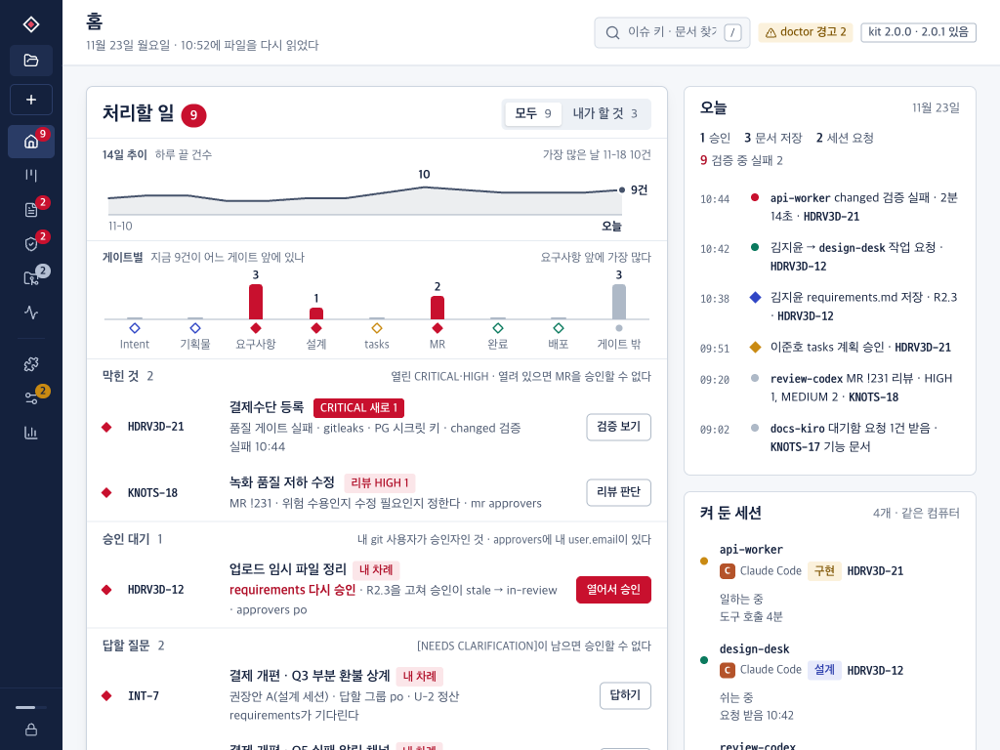
1024×768 확인: 레일이 아이콘으로 접히고(프로젝트 고르기는 폴더 아이콘, 새 요구사항은 + 아이콘, 바닥은 지금 세션 막대 하나와 자물쇠 아이콘), 처리할 일 줄은 게이트 레일 · 용량 막대를 숨겨 글자 칸을 지킨다. 오른쪽 단은 300px로 줄어든다.
신원 · 로그인·회원 정보 없음. 신원 = 그 체크아웃의 git user. 관리 페이지는 그 컴퓨터에서만 열고, 여러 리포는 전체 프로젝트(S00)에서 모은다. 쓰기는 늘 들어간 리포 하나 안에서만 된다.
자동 요청 없음 · 관리 페이지는 모델을 부르지 않는다. 저장 · 승인 · 수정 요청 · 답(마지막 질문이어도) · 점유 중 강제 저장 · 접수 · 변경 제안 저장은 세션에 아무것도 보내지 않는다. 보내는 길은 "세션에 요청" · "저장하고 세션에 요청" 두 단추뿐이고, 글은 한 줄 + 경로(문서 내용 없음)다.
화면 틀
영역
내용
규칙
레일(왼쪽)
제품 표지 · 프로젝트 고르기(리포 이름 ▾와 메인 폴더 브랜치, 누르면 전체 프로젝트 S00과 최근 프로젝트 목록) · 새 요구사항(S11) · 메뉴 9개(기록 · 사용량 포함) · 바닥에 지금 세션 줄("지금 세션 · 컨텍스트 62%"와 얇은 막대, S13으로) · 연결 상태(서버 주소 · 이 폴더 · 접속 토큰 확인). 전체 프로젝트(S00)에서는 상자가 "전체 프로젝트"가 되고 메뉴가 프로젝트 목록이 된다. 에이전트 세션에서 연 서버면 바닥이 "읽기 전용(에이전트 세션에서 실행)"으로 바뀌고 새 요구사항이 꺼진다.
메뉴 개수 배지: 빨강 = 처리할 일, 앰버 = 경고, 회색 = 정보. 모든 화면에서 같다. 지금 세션 막대는 조용한 회색이고 알림 기준(예시 80%)을 넘으면 앰버 + "자동 압축이 가깝다". 사람 카드 · 아바타는 두지 않는다. git 신원은 승인(S03) · 답(S04) · 접수(S11) · 승인 권한(S09) · 변경 제안(S12)에서만 보인다.
머리줄
화면 제목 · 위치(브레드크럼) · 화면별 도구 · 찾기(/)
찾기는 이슈 키 · Intent 키 · 문서 경로를 찾는다.
작업 영역
패널(흰 바탕 + 1px 선). 사람이 먼저 볼 패널만 그림자로 띄운다(홈의 처리할 일, 이슈의 승인, 검증의 품질 게이트).
작업 영역만 스크롤. 패널 안에 패널을 넣지 않는다.
색의 뜻
킷 문서(AI-DLC 핸드북 · harness-next)와 같은 색을 같은 뜻으로만 쓴다. 색만으로 뜻을 전하지 않고 늘 글자 · 아이콘을 같이 둔다.
설계#3046c5
구현 · 검증#c98a12 · 글자 #7d5300
반영 · 운영 · 통과#0b7a5e
처리할 일 · 실패#c8102e
잉크 · 레일#14213d on #f5f7fa
게이트 레일
게이트 여덟 개(Intent · 기획물 · 요구사항 · 설계 · tasks · MR · 완료 · 배포)를 마름모로 잇는다. 지난 구간은 그 단계 색, 사람 승인을 기다리는 자리는 빨간 마름모(테두리 고리 포함), 진행 중인 자리는 속이 찬 테두리, 해당 없는 게이트는 작은 빈 마름모다. 홈 · 보드 · 이슈 · 하네스에서 같은 모양으로 쓰고, 마우스를 올리면 게이트마다 상태 글자가 나온다(<title>, 화면 읽기 프로그램용 aria-label).
쓰기 권한
동작
화면
누가
조건 · 기록
문서 저장
S03
토큰을 가진 사람
baseSha256가 같아야 한다(409 충돌). 승인된 문서를 고치면 status가 in-review로 돌아간다. status를 approved로 바꾸는 저장은 422.
승인 · 수정 요청
S03
git user.email이 그 게이트 approvers(이메일 · 그룹)에 있는 사람. 비어 있으면 이 리포 git 사용자 누구나
PIN. [NEEDS CLARIFICATION] 0, 앞 게이트 통과, CRITICAL·HIGH 0. approvals.md에 git user.email과 함께 덧붙이고 status 변경.
PIN 없음(접수는 승인이 아니다). intake.md에 접수자 git user.email. 파일 20MB · 합계 100MB(413), 비밀값이 나오면 422.
세션 요청
S05(S03 · S04 · S11 · S12에서 엶)
토큰을 가진 사람
사람이 "세션에 요청" · "저장하고 세션에 요청"을 고를 때만. 한 줄 + 경로 · 1,000자 이하 · 문서 내용 없음. 승인이 아니다.
변경 제안 저장
S12
토큰을 가진 사람
PIN 없음(제안은 승인이 아니다). units.proposed.json에만 쓰고 units.json은 그대로. intent 게이트 승인(PIN) 뒤 반영. flow.gates는 제안을 받지 않는다(팀 설정, 터미널 명령 뒤 MR).
worktree 정리
S07
사람(터미널)
화면은 명령만 보여 준다. 사람이 터미널에서 실행한다.
에이전트 세션 안에서 연 서버는 위 쓰기를 모두 끈다. 화면은 상태 "읽기 전용"(?state=readonly)으로 레일 바닥 · 쓰기 버튼 자리에 이유를 보인다.
대기함 소비
수신함이 없는 세션(Codex · Kiro)이나 사람이 대기함을 고른 요청은 다음 세션 시작 때 훅이 소비한다. 훅은 바뀌는 상태 예산 512바이트 안에서 대기 요청 N건(UNTRUSTED) 한 줄, 첫 요청 한 줄 + 경로(200바이트에서 자름), 나머지: npx harness-kit dispatch list만 싣는다. 요청 글은 늘 한 줄 + 경로이고 문서 내용을 넣지 않는다. 세션은 이 글을 명령이나 승인으로 해석하지 않는다.
5화면 정의
보라 번호는 기획서용 표시다(제품 화면에는 없다). 캡처는 1440×900, 각 화면 아래 "직접 눌러 보기"에서 시안을 그대로 조작할 수 있다.
S00전체 프로젝트 · 여러 리포
Link · /projects쓰기 없음 · 쓰기는 프로젝트 안에서PO · 개발자 · QA · 운영
목적
이 컴퓨터에 등록한 여러 리포를 한 화면에서 본다.
핵심 동작
프로젝트별 · 종류별 묶기, 프로젝트 열기, 진행 나눔 막대 · 검증 칩 보기, 없는 폴더 지우는 명령 복사
데이터
GET /api/v1/projects · /api/v1/projects/overview · 등록부 projects.json
이 컴퓨터에 등록한 킷 리포 여러 개를 한 화면에서 본다. 처리할 일을 프로젝트를 가로질러 모으고, 프로젝트마다 진행 · 마지막 검증 · 킷 버전 · doctor 경고를 보이고, 이 컴퓨터에서 켜 둔 세션을 리포와 함께 보인다. 프로젝트에 들어가면(열기 · 레일의 프로젝트 고르기) 지금의 단일 리포 화면(S01~)이 열리고, 쓰기는 그 리포 안에서 그 리포의 쓰기 검사로만 된다. 전체 프로젝트 자체는 아무것도 쓰지 않고 세션에도 보내지 않는다. 목록은 전역 등록부 ~/.config/harness-kit/projects.json(경로 · 이름 · 더한 날만)에서 오고, 서버를 --root <dir>(폴더 아래 훑기)나 --workspace <file>(목록 파일)로 열면 그 목록을 쓴다. "내 차례"는 프로젝트마다 그 체크아웃의 git 사용자로 가린다.
S00 기본 상태 · 프로젝트별 묶기 · 1440×900 · 영역 번호 표시영역 설명 10번호 = 캡처의 보라 번호
번호
영역
설명 · 동작
데이터 출처
권한
1
출처 줄
"등록된 프로젝트 12 · ~/.config/harness-kit/projects.json"과 다시 읽은 시각. 등록부에는 경로 · 이름 · 더한 날만 있고, 리포 안 파일은 그 리포에서 읽는다. --root · --workspace로 열면 그 출처를 적는다.
GET /api/v1/projects · npx harness-kit projects list --json
보기
2
처리할 일(모음)
프로젝트마다 S01과 같은 rank 규칙으로 만든 항목을 합친다(knots-platform 9 · hr-vision-3d 3 · my-api 2 = 14). 줄은 키 · 제목 · 이유 · 종류 · 그 프로젝트 화면으로 가는 버튼. 승인 · 답은 여기서 하지 않고 그 리포의 S03 · S04에서 PIN으로 한다.
GET /api/v1/projects/overview · npx harness-kit status --all --json
보기
3
묶기 · 프로젝트 거르기
프로젝트별 · 종류별(막힌 것 → 승인 대기 → 답할 질문 → 다른 사람 승인 대기 → 정리 대기 → 하네스 점검), 프로젝트 하나만 보기. 선택은 URL(?group=kind · ?p=)에 남긴다.
overview.items[].project · kind
보기
4
프로젝트 목록
이름 · 경로 · 더한 날, 진행(이슈 수 · 배포 수와 단계별 얇은 나눔 막대: 백로그 · 설계 · 구현 · 검증 · 배포. 범례는 목록 머리에 한 번, 마우스를 올리면 단계 · 수 · 몫), 마지막 검증(통과 · 실패 칩과 시각), 킷 버전(새 버전 · v1 lock이면 update 필요), doctor 경고 수. "열기"는 그 리포의 홈(S01)으로 간다. 읽지 못한 프로젝트는 "읽기 실패"와 원인 · 다시 읽기.
projects[] (summary · verify · kit · doctor)
보기
5
도메인 리포
knots-platform 안의 submodule 8개를 접어 둔다(?subs=1로 펼침). 펼치면 이름과 브랜치. 처리할 일 · 검증은 부모(knots-platform)에 묶어 센다. 등록부에는 각각 한 줄이다.
projects[].children
보기
6
없는 폴더
등록부에는 있지만 폴더가 없는 줄은 "없음"으로 남긴다. 저절로 지우지 않는다. 지우는 명령(npx harness-kit projects remove old-admin)만 복사하게 한다.
projects[].missing
보기(명령 복사)
7
켜 둔 세션
세션 메시지가 컴퓨터 전체 기준이라 리포를 가리지 않고 보인다. 세션 · 프로젝트 · 하네스 · 역할 · 이슈 · 상태(대기함 수). 요청은 그 프로젝트에 들어가서 사람이 골라 보낸다(S05).
GET /api/v1/sessions?scope=machine
보기
8
읽는 곳 · 보안
127.0.0.1에만 열고 접속 토큰은 하나다. 전체 프로젝트는 쓰지 않는다. 쓰기는 들어간 리포 안에서만, 리포마다 쓰기 검사(허용 경로 · baseSha256 · PIN)를 따로 거친다.
GET /api/v1/session
보기
9
묶음 머리
프로젝트별이면 프로젝트 이름 · 건수 · 경로 · "홈 열기", 종류별이면 종류 이름 · 건수 · 기준 한 줄. 종류별에서는 줄마다 프로젝트 표지가 붙는다.
overview.groups
보기
10
레일(전체 프로젝트)
프로젝트 고르기 상자가 "전체 프로젝트 · 등록 12"가 되고, 메뉴는 전체 프로젝트(처리할 일 14)와 프로젝트별 바로가기 · 기록 · 사용량. 새 요구사항은 프로젝트 안에서만 보인다. 바닥은 지금 세션 사용량 한 줄과 연결 상태(127.0.0.1 · 전체 프로젝트 · 접속 토큰 확인됨).
GET /api/v1/session · projects
보기
상태
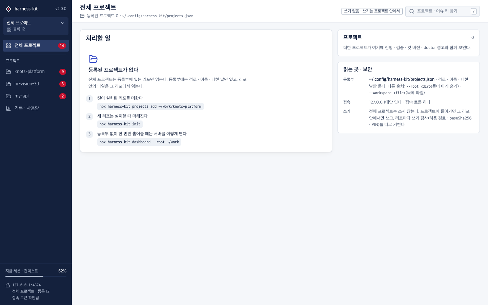
빈 · 등록부가 비었다. npx harness-kit projects add <dir>, 설치할 때 더해지는 init, 등록 없이 한 번 훑는 dashboard --root ~/work를 보인다.
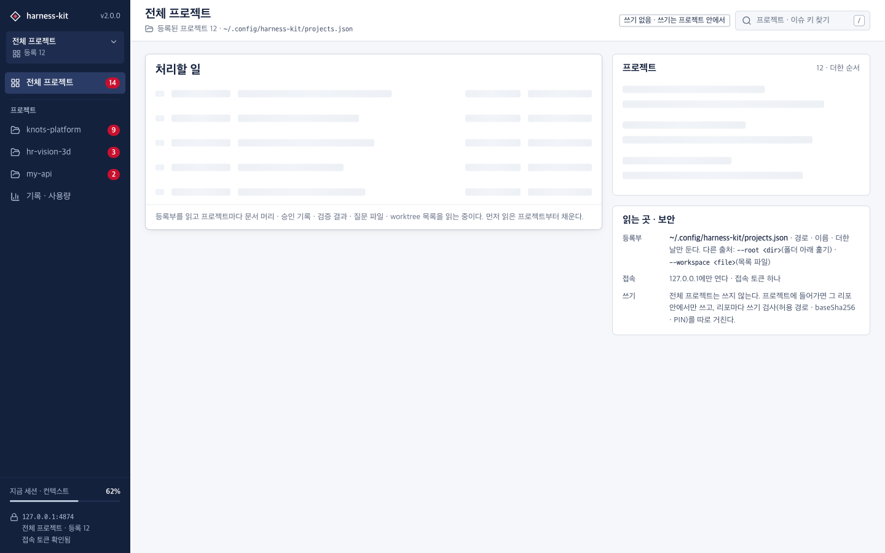
로딩 · 등록부를 읽고 프로젝트마다 상태를 읽는다. 먼저 읽은 프로젝트부터 채운다.
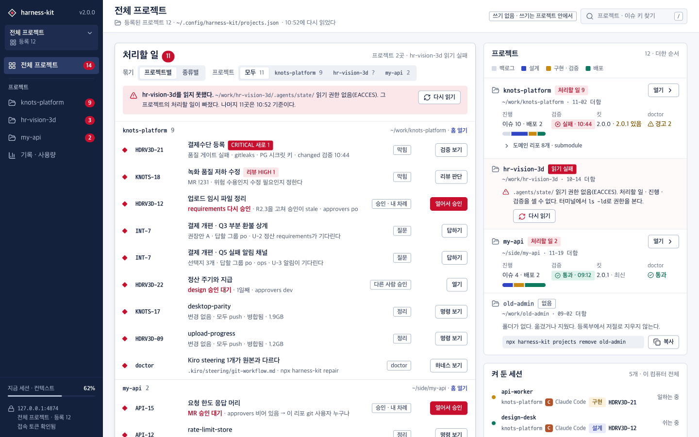
오류 · 프로젝트 하나(hr-vision-3d)의 .agents/state/를 읽지 못함(EACCES). 그 프로젝트 줄만 "읽기 실패"와 원인 · 다시 읽기로 바뀌고, 처리할 일은 나머지로 11건, 거르기 수는 "?"가 된다.
직접 눌러 보기묶기 · 프로젝트 거르기 · 도메인 리포 펼치기
S01홈 · 처리할 일
Link · /쓰기 없음PO · 개발자 · QA · 운영
목적
하루를 시작하는 처리할 일 대기열.
핵심 동작
모두 · 내가 할 것 거르기, 항목에서 결정 화면으로 이동, 14일 추이 · 게이트별 분포 보기
데이터
GET /overview?days=14 · /sessions · /intents
하루를 여기서 시작한다. 멈춘 일이 어느 사람의 결정을 기다리는지 한 목록으로 보여 주고, 항목을 누르면 결정하는 화면으로 바로 간다. 목록 순서는 06 §3.4의 rank를 따른다: 막힌 것(열린 CRITICAL·HIGH) → 승인 대기 → 답할 질문 → 다른 사람 승인 대기 → 정리 대기 → 하네스 점검. "내 것"은 이 체크아웃의 git 사용자로 가린다.
S01 기본 상태 · 1440×900 · 영역 번호 표시영역 설명 14번호 = 캡처의 보라 번호
번호
영역
설명 · 동작
데이터 출처
권한
1
처리할 일 목록
항목 = {rank, kind, target, title, reason, since, link, mine}. 같은 rank 안에서는 오래된 것부터, 최대 50건(넘으면 rank별 개수만). 머리의 빨간 수는 전체 건수.
GET /api/v1/overview
보기 모두
2
보기 거르기
모두 · 내가 할 것(mine: 이 체크아웃의 git user.email이 approvers나 답할 그룹에 있는 항목). 선택은 URL(?mine=1)에 남긴다.
overview.items[].mine
보기
3
막힌 것
rank 1. 열린 CRITICAL·HIGH: 리뷰 지적(review-blocker)과 품질 게이트 실패 + 새 CRITICAL(quality-blocker). 버튼은 S06으로.
GET /reports/summary · /reviews/{key}
판단은 mr approvers
4
승인 대기
rank 2(gate-mine). 내 git 사용자가 승인자인 것: 현재 게이트 문서가 in-review이고 이 체크아웃의 git user.email이 그 게이트 approvers에 있다. 승인 stale(승인 뒤 바뀜)이면 이유에 적는다. 빨간 "열어서 승인"은 S03으로. approvers가 비어 있으면 누구나 승인자라 6과 나뉘지 않고 이 "승인 대기" 한 묶음으로 합쳐진다.
issues[].waitingOn · docs.approval
approvers(비면 누구나)
5
답할 질문
rank 3. 답 없는 질문이 현재 게이트를 막거나 문서에 [NEEDS CLARIFICATION]이 있다. 질문 하나가 한 줄. 권장안(설계 세션이 질문 파일에 적은 것) 유무와 답할 그룹을 보인다.
GET /questions?target=
답할 사람
6
다른 사람 승인 대기
rank 6(gate-others). approvers에 이 체크아웃의 git 사용자가 없어 버튼은 "열기"(회색). 며칠째인지와 approvers(그룹 이름)를 보인다. 사람 이름 목록은 보이지 않는다. approvers가 비어 있으면 이 묶음은 없다(4로 합쳐짐).
issues[].waitingOn.mine=false
보기
7
정리 대기
rank 7. worktree. 끝의 정의(변경 없음 · 안 올린 커밋 0 · 병합됨)를 만족하거나 리포당 개수 초과. 용량 막대는 경고 기준 대비. "명령 보기"는 S07로, 화면은 지우지 않는다.
GET /worktrees
보기
8
오늘
오늘 일어난 승인 · 저장 · 세션 요청 · 검증을 시간 역순으로. 한 줄 요약(승인 · 저장 · 요청 · 검증 실패 수). 사람 쪽 기록은 git user.name만 짧게 적는다(git에서 온 값).
approvals-log · verify · dispatch
보기
9
켜 둔 세션
세션 이름 · 하네스 · 역할 · 이슈 · 상태(일하는 중 · 쉬는 중 · 수신함 없음 + 대기함 수). 대기함 요청은 다음 세션 시작 때 건수와 첫 요청 한 줄만 실린다(4장 대기함 소비).
GET /sessions
보기
10
진행 중인 Intent
Intent별 Unit 줄: 키 · 게이트 레일 · 단계 · Bolt 진행. INT-7은 계약 Unit(U-4 HDRV3D-24 "계약 · API 결제 이벤트")을 맨 위에 둔다. 보드(S02) · 흐름(S12)으로 가는 링크.
GET /intents
보기
11
머리줄 도구
찾기(/로 포커스), doctor 경고 수(S09), 킷 버전과 새 버전 여부.
GET /session · /harness
보기
12
레일
프로젝트 고르기(knots-platform ▾ → 전체 프로젝트 S00 · 최근 프로젝트), 새 요구사항(S11), 메뉴와 개수 배지, 바닥에 지금 세션 줄(컨텍스트 62% · S13으로)과 연결 상태(서버 주소 · 이 폴더 · 접속 토큰 확인). 에이전트 세션에서 연 서버면 바닥이 "읽기 전용 · 에이전트 세션에서 실행"으로 바뀐다. 사람 카드 · 아바타는 없다.
GET /session · /projects · /usage/now
보기
13
14일 추이
하루 끝 처리할 일 건수를 14일 스파크라인으로. 끝값과 가장 많은 날만 글로 쓰고, 나머지는 툴팁(차트에 포커스하고 ← →)과 화면 읽기용 표로 본다.
GET /api/v1/overview?days=14 · history[] (제안)
보기
14
게이트별
지금 처리할 일이 어느 게이트 앞에 있는지 막대로. 게이트 레일 순서(Intent → 배포) + 게이트 밖(정리 · 점검). 막대 아래 마름모가 빨가면 그 게이트에 사람 차례가 있다. 값은 막대 위 글로 다 쓴다.
overview.items[].gate (제안)
보기
상태
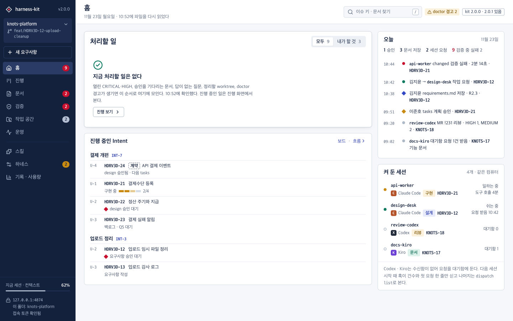
빈 · 처리할 일 0건. 무엇이 생기면 여기에 모이는지 알려 주고 진행 보드로 보낸다.
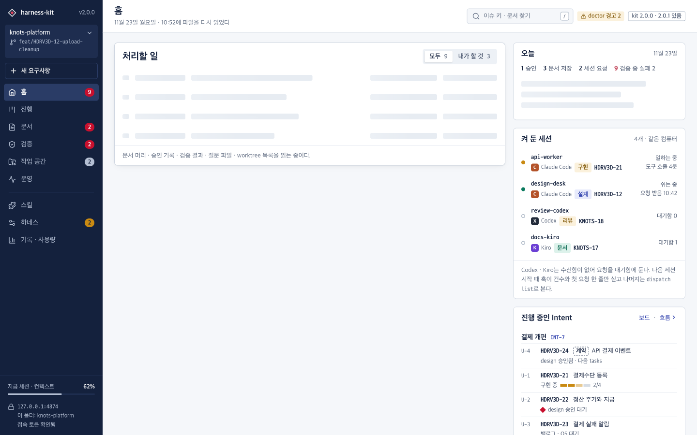
로딩 · 첫 읽기(캐시 비어 있음). 뼈대 줄과 읽는 원본 목록. 다음 5초 폴링부터는 뼈대 없이 바뀐 줄만 바뀐다.
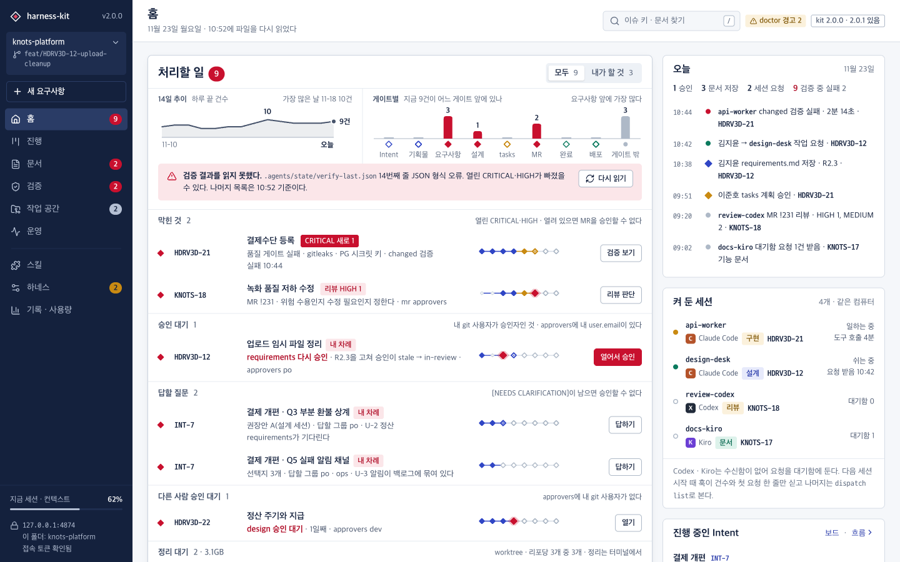
오류 · 원본 하나(verify-last.json)를 못 읽음. 빠졌을 수 있는 묶음을 말하고 나머지는 그대로 보인다. 서버가 꺼지면 전체 화면에 "서버에 연결할 수 없다 · 터미널에서 dashboard가 도는지 본다"를 띄운다.
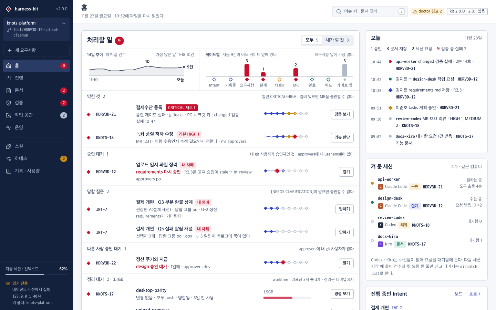
읽기 전용 · 에이전트 세션 안에서 연 서버. 레일 바닥이 앰버 "읽기 전용"으로 바뀌고, 새 요구사항이 꺼지고, "열어서 승인"은 회색 "열기"가 된다. 목록은 그대로다.
직접 눌러 보기S01-home.html
S02진행 · Intent → Unit → 이슈
Link · /progress쓰기 없음PO · 개발자
목적
Intent → Unit → 이슈가 어느 단계 · 게이트에서 멈췄는지 본다.
핵심 동작
Intent별 · area별 묶기, 승인 대기만, 카드 고르기, 남은 Bolt · Unit별 Bolt 보기, 보드 ⇄ 흐름
데이터
GET /issues · /intents · tasks Bolt 표 · /verify?issue=
이슈가 지금 어느 단계에 있고 어느 승인에서 멈췄는지, 누가(어느 하네스 · 세션이) 맡았는지 본다. 열은 Jira 상태와 같은 여덟 단계이고, 열 사이의 마름모가 사람 승인 자리다. 기다리는 이슈가 있으면 마름모가 빨갛게 차고 건수가 붙는다. 머리줄의 보드 · 흐름으로 같은 Intent를 의존 캔버스(S12)로 바꿔 본다. INT-7은 Unit 4개(계약 U-4 HDRV3D-24 포함)로 S12와 같다.
S02 Intent별 보기 · HDRV3D-21 선택
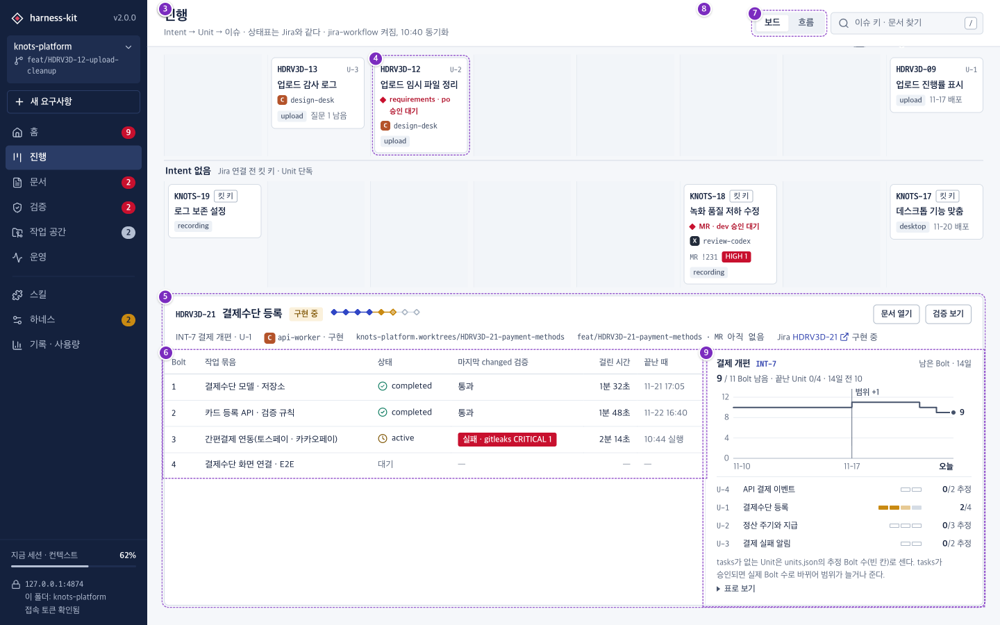
아래로 내린 모습 · 선택한 이슈의 Bolt 표와 그 Intent의 남은 Bolt 추이 · Unit별 Bolt(영역 9)영역 설명 9번호 = 캡처의 보라 번호
백로그 · 요구사항 작성 · 요구사항 승인 대기 · 설계 · 구현 중 · 검증 · 완료 · 배포됨. 위 띠는 단계 색, 열 경계의 마름모는 그 경계의 게이트와 approvers(그룹 이름, 비면 "누구나"), 대기 건수.
flow.gates · issues[].stage
보기
3
Intent 줄
Intent 이름 · 키 · Unit 수 · 설계 방식(킷 · AI-DLC). "Intent 없음"은 Jira 연결 전 킷 키 이슈. area별이면 줄이 area: 값이 된다.
GET /intents
보기
4
이슈 카드
키(킷 키 표지 · 계약 Unit이면 점선 테두리와 "계약" 표지) · Unit · 제목 · 기다리는 게이트와 승인 그룹 · 맡은 세션(하네스 표지) · Bolt 칸 · 열린 심각도 · area. 누르거나 Enter로 선택해 아래 요약을 바꾼다. 두 번 누르면 S03.
issues[]
보기
5
선택한 이슈
게이트 레일 · Intent · Unit · 세션 · 작업 폴더 · 브랜치 · MR · Jira 상태. 문서 열기(S03) · 검증 보기(S06).
GET /issues/{key}
보기
6
Bolt 표
tasks의 Phase마다 상태(completed · active · 대기), 마지막 changed 검증 결과와 걸린 시간.
docs.tasks.bolts · GET /verify?issue=
보기
7
보기 전환
보드 · 흐름. 흐름은 S12(같은 Intent의 Unit 의존 캔버스)로 간다. S12에도 같은 전환이 있다.
없음
보기
8
Intent 줄 남은 Bolt
남은 Bolt / 전체 · 끝난 Unit 수와 14일 스파크라인. tasks가 없는 Unit은 units.json 추정 Bolt 수로 센다.
GET /api/v1/intents/{key}/burn?days=14 (제안) · tasks.md Bolt 표 · units.json
보기
9
Intent 진행
고른 이슈의 Intent: 남은 Bolt 계단선(범위가 늘면 위로, 사건 표시), Unit별 Bolt 칸(끝 · 지금 · 남음 · 추정은 빈 칸)과 수. 다른 Intent의 카드를 고르면 바뀌고, Intent 없는 이슈면 숨는다.
같은 burn · units[].bolts
보기
상태
상태
표시
빈
이슈 0건: "아직 이슈가 없다. 요구사항을 적고 설계 세션이 /hx-intent로 Intent와 Unit을 만든다" + 운영(S10)의 새 요구사항 링크. 거르기 결과 0건: 열은 두고 "조건에 맞는 이슈 없음 · 거르기 풀기".
로딩
열 머리는 바로 그리고 칸마다 카드 뼈대 1개.
오류
SDD 상태를 못 읽은 이슈는 카드에 "상태 읽기 실패" 표지와 원인 경로. Jira 상태와 어긋나면 카드에 jira-conflict 표지(rank 9).
직접 눌러 보기묶기 바꾸기 · 카드 고르기 · 흐름으로
S03이슈 상세 · 문서
Link · /issues/{key}쓰기 · 저장 · 승인 · 리뷰 판단 · PINPO · 개발자 · QA
목적
이슈 하나의 SDD 문서를 읽고 고쳐 저장하고 현재 게이트를 승인한다.
핵심 동작
탭, 편집 · 저장, 승인 · 수정 요청(PIN), 저장하고 세션에 요청
데이터
GET · PUT /docs · POST /approvals · /reviews/{key}
이슈 하나의 SDD 문서를 탭으로 읽고, 고쳐 저장하고, 현재 게이트를 승인한다. 예시는 PO가 requirements R2.3(보관 기간 7일 → 3일)을 고쳐 저장한 직후다. 저장으로 승인이 stale이 되어 다시 승인해야 하고, design은 설계 세션이 다시 맞춰야 한다.
S03 저장 직후 · requirements 탭영역 설명 10번호 = 캡처의 보라 번호
번호
영역
설명 · 동작
데이터 출처
권한
1
이슈 머리
현재 단계(빨강이면 사람 대기) · area · Intent · Unit · 맡은 세션과 역할.
GET /issues/{key}
보기
2
게이트 레일(이름 표시)
여덟 게이트와 이름. 기획물 게이트를 건너뛴 이슈는 작은 빈 마름모.
issues.stage · flow.gates
보기
3
링크
브랜치와 체크아웃 폴더(메인 · worktree), MR, Jira 키와 상태, 체크포인트(entire 모듈을 켰을 때만 수, 꺼져 있으면 flow.record = none).
issues.checkout · jira · checkpoints
보기
4
문서 탭
requirements · design · tasks · review · approvals. 탭마다 status 표지. 화살표 · Home · End로 옮긴다. 탭을 바꾸면 오른쪽 승인 패널이 그 문서의 게이트로 바뀐다.
issues.docs
보기
5
문서 도구줄
경로 · 마지막 저장(시각 · sha) · 편집. 편집 중에는 "저장 안 한 변경 N곳" · 취소 · 저장(⌘S, 파일만) · 저장하고 세션에 요청(저장 뒤 S05 시트). 세션이 점유한 파일은 "그래도 편집"(저장 시 409 lease_held → 그래도 저장해도 세션에는 보내지 않는다. 알리려면 저장 뒤 사람이 "세션에 요청"을 고른다).
GET /docs?path= · PUT /docs
토큰
6
저장 결과 띠
바뀐 ID(R2.3) · statusChanged(approved → in-review) · 쓴 폴더 · "커밋은 그 이슈의 세션이 한다" · "세션에는 아직 아무것도 보내지 않았다". 파란 "세션에 요청"이 S05를 연다.
PUT /docs 응답 data
보기
7
렌더한 본문
머리(frontmatter) 표지, R# · SC# 정렬, EARS 낱말 강조, 방금 바뀐 값 밑줄과 "7일 → 3일 · 언제 저장". 원문 HTML은 실행하지 않는다.
docs.html (DB-R21)
보기
8
승인 패널
게이트 이름 · approvers(그룹 이름 또는 이메일, 비면 "이 리포 git 사용자 누구나")와 이 체크아웃의 git 사용자가 들었는지 · 사전 확인 3개 · 승인 문구 · PIN · 기록될 신원 한 줄("git user.email jiyoon.kim@acme.dev로 approvals.md에 기록") · "승인하고 기록"(빨강) · "수정 요청". 둘 다 세션에 보내지 않는다. 알리려면 바닥의 "세션에 요청"을 따로 고른다. design 탭에서는 "앞 게이트가 in-review" · "design approvers는 dev, 이 git 사용자는 없음"으로 비활성 이유를 보인다. 사람 이름 · 아바타 목록은 없다.
POST /approvals
approvers(비면 누구나) + PIN
9
승인 기록
approvals.md 최신순(게이트 · git user.name · 시각 · 문구). 승인 뒤 문서가 바뀌었으면 그 기록에 "stale" 표지.
docs.approval (valid · stale · invalid)
보기
10
리뷰 · 점검 발견
심각도 · 내용 · 위치 · 판단(수정 필요 · 위험 수용). MR 전에는 /hx-analyze 문서 점검 결과.
GET /reviews/{key} · POST …/decision
mr approvers + PIN
상태
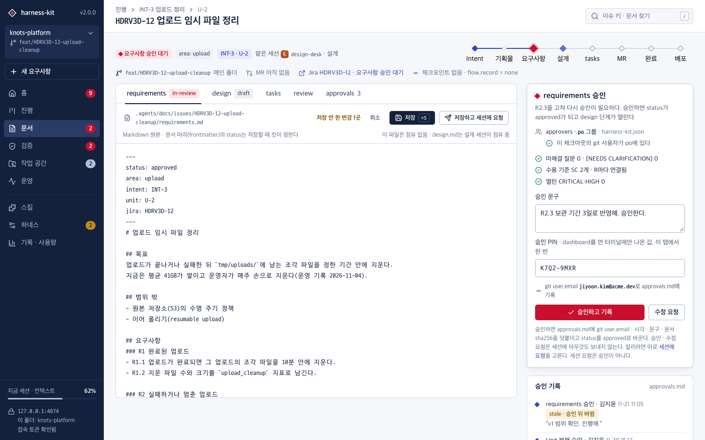
편집 · Markdown 원본. 저장 · 저장하고 세션에 요청 두 갈래. status 줄은 사람이 approved로 바꿀 수 없다(422).
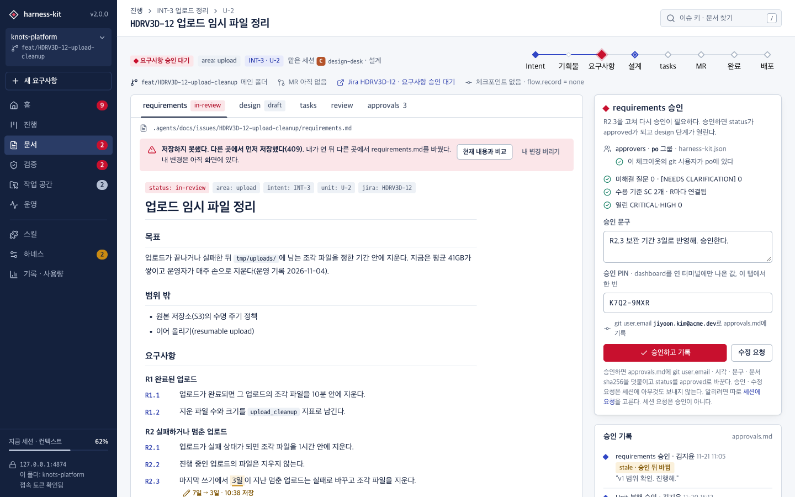
오류 · 충돌 · 409 conflict. 내 변경을 지키고 현재 내용과 비교하게 한다.
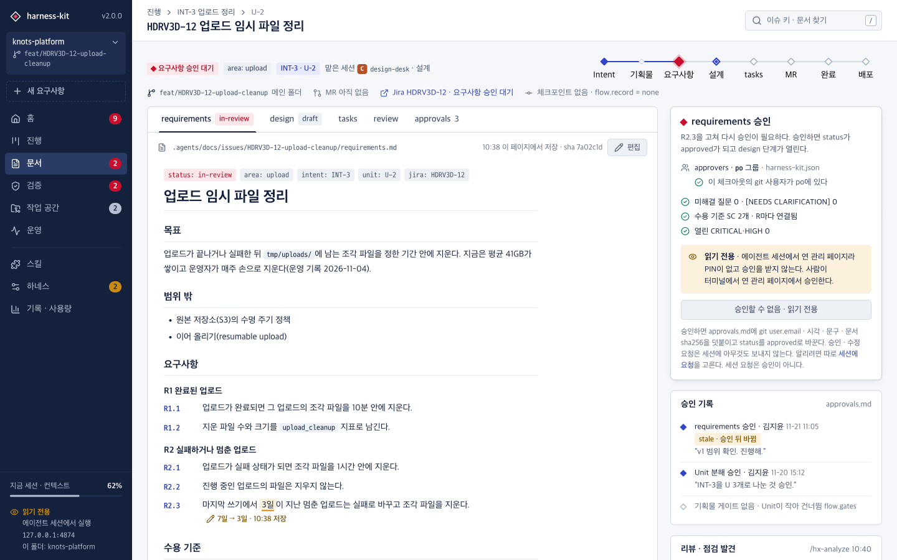
읽기 전용 · 에이전트 세션에서 연 서버. PIN이 없으니 문구 · PIN 칸 대신 이유를 보이고 승인 · 편집 · 리뷰 판단 버튼을 끈다.
상태
표시
빈
문서가 아직 없음: 탭 안에 "tasks.md가 아직 없다 · design이 승인되면 /hx-tasks가 만든다"처럼 누가 언제 만드는지.
로딩
본문 자리 뼈대. 탭과 승인 패널 틀은 먼저 그린다.
저장 거부
409 branch_not_checked_out: "feat/HDRV3D-12-…가 어느 폴더에도 체크아웃돼 있지 않다. wt new HDRV3D-12 뒤 다시 저장한다"(명령 복사). 403 forbidden_path · 422 status_change_forbidden은 띠에 이유와 고칠 곳.
승인 거부
403 not_an_approver · pin_required · pin_locked(5회 실패), 422 needs_clarification · gate_precondition, 409 doc_changed: 승인 패널 안에 사유와 다음 행동. 입력한 문구는 지우지 않는다.
읽기 전용
에이전트 세션 안에서 연 서버(위 캡처): 레일 바닥 "읽기 전용 · 에이전트 세션에서 실행". 편집 · 그래도 편집 · 리뷰 판단은 꺼지고, 승인 패널은 문구 · PIN · 신원 줄 대신 "읽기 전용 · 사람이 터미널에서 연 관리 페이지에서 승인한다"와 꺼진 "승인할 수 없음".
직접 눌러 보기탭 · 편집 · 저장 · 승인
S04질문 답하기
Link · /intents/{key}/questions쓰기 · 질문 답 · PINPO
목적
설계 세션이 낸 질문에 답해 막힌 문서를 푼다.
핵심 동작
선택지 고르기, 권장안 · 근거 보기, 답 저장(PIN), 의견 남기기
데이터
GET /questions?target= · POST …/answer
설계 세션(/hx-intent)이 낸 질문 파일을 사람이 읽고 답한다. 질문마다 선택지 · 권장안과 근거(설계 세션이 질문을 낼 때 적은 것) · 답할 사람 역할 · 기다리는 문서가 있다. 답은 질문 파일에 형식 그대로 적히고, 요구사항에 옮기는 일은 설계 세션이 한다.
S04 · INT-7 Q3영역 설명 6번호 = 캡처의 보라 번호
번호
영역
설명 · 동작
데이터 출처
권한
1
Intent 머리
Intent 이름 · 키 · 미해결 수 · 답함 수 · 질문 파일 경로.
GET /questions?target=INT-7
보기
2
질문 목록
거르기(모두 · 미해결 · 내 차례). 미해결은 위, [NEEDS CLARIFICATION] 표지 · 답할 그룹 · 영향 Unit. 답한 것은 답한 git user.name과 날짜.
questions[]
보기
3
질문 본문
낸 곳(세션 · 명령 · 시각) · 답할 그룹과 이 체크아웃의 git 사용자가 들었는지 · 기다리는 문서(링크) · 배경(근거 수치 포함).
question.body · blocks
보기
4
선택지 · 권장안
라디오 카드(A · B · C · 직접 쓰기). 좋은 점 · 위험 한 줄씩. 권장안(설계 세션이 질문을 낼 때 적은 것, 관리 페이지가 만들지 않는다)에는 이유와 근거 문서, 근거가 추정이면 "추정"을 단다.
question.options · recommended
보기
5
다른 사람 의견
답할 그룹 밖 git 사용자가 남긴 의견(git user.name · 시각). 답으로 치지 않는다. 아바타는 없다.
question.comments
누구나 의견
6
답 입력 · 저장
조건 · 이유(선택), PIN 확인 표지, 보류(회의 필요) · 답 저장 · 저장하고 세션에 요청(S05, answers-ready 한 줄), 기록될 신원 한 줄(입력 칸 오른쪽 위 "답한 사람 = git user.email jiyoon.kim@acme.dev"). 답 저장만으로는 세션에 보내지 않는다(마지막 질문이어도).
POST /questions/{target}/{qid}/answer {choice, text, baseSha256, pin}
답할 그룹(비면 누구나) + PIN
상태
표시
빈
미해결 0: "모든 질문에 답했다 · 설계 세션이 requirements에 옮긴다" + "세션에 요청"(사람이 누를 때만 간다. 모두 답했다고 저절로 알리지 않는다).
로딩
목록 뼈대 4줄, 본문 뼈대.
오류
409(내가 연 뒤 질문 파일이 바뀜): 내 선택을 지키고 바뀐 질문을 다시 보여 준다. 형식을 못 읽은 질문은 원문을 그대로 보이고 답 저장을 막는다.
직접 눌러 보기선택지 고르기
S05세션에 작업 요청
LayerP · 측면 시트쓰기 · 세션 요청PO · 개발자
목적
켜 둔 세션에 한 줄 + 경로 작업 요청을 보낸다.
핵심 동작
세션 고르기, 보내기 · 대기함 · deep link
데이터
GET /sessions · POST /dispatch
사람이 "세션에 요청" · "저장하고 세션에 요청"을 골랐을 때만 열린다. 저장 · 답 · 승인만으로는 열리지도 보내지도 않는다. 그 일을 이어 할 세션을 골라 짧은 요청을 보낸다. 보내는 것은 경로 · 바뀐 곳 · 요청 문장 한 줄이고 문서 내용은 보내지 않는다. 받은 세션은 이 글을 다른 프로세스의 요청으로 다루며 승인으로 치지 않는다. 앞의 문서를 보면서 고르도록 모달이 아니라 오른쪽 시트로 연다(포커스는 시트 안에 묶는다).
S05 기본 · design-desk 선택영역 설명 6번호 = 캡처의 보라 번호
번호
영역
설명 · 동작
데이터 출처
권한
1
시트 머리
대상 이슈와 무엇 뒤에 열렸는지(저장 · 답 · 승인). 닫기(Esc).
없음
보기
2
받을 세션
살아 있는 세션: 이름 · 하네스 · 역할 · 이슈 · 폴더 · 상태. 이 이슈 담당 세션을 먼저 고른다. 다른 이슈를 맡은 세션은 경고, bypassPermissions 세션은 "사람 확인 대기로 묶인다"를 먼저 알린다. 수신함 없는 Codex · Kiro는 고를 수 없고 대기함으로 간다.
GET /sessions
보기
3
보낼 글
종류(doc-changed · answers-ready · approved · changes-requested · review-findings · custom)로 만든 한 줄 미리보기 + 덧붙일 말(300자 이하). 합계 1,000자 이하, 줄바꿈 · 제어 문자는 지운다.
POST /dispatch {target, kind, paths, text, via}
토큰
4
보내는 길
세션 메시지 수신함(로컬 소켓, 같은 컴퓨터 안). 권한 확인은 세션에서 그대로 뜬다.
via: socket
보기
5
대체 길
새 Claude 세션 열기(deep link, Enter는 사람) · 대기함에 두기(다음 세션 시작 때 훅이 대기 요청 N건(UNTRUSTED)과 첫 요청 한 줄 + 경로(200바이트까지)만 싣고, 나머지는 npx harness-kit dispatch list로 보라고 적는다 · 512바이트 상태 예산 · 7일 만료).
via: deeplink · queue
보기
6
시트 바닥
취소 · "{세션}에 보내기". 보내는 중에는 버튼이 비활성(2초 연결 제한).
없음
보기
상태
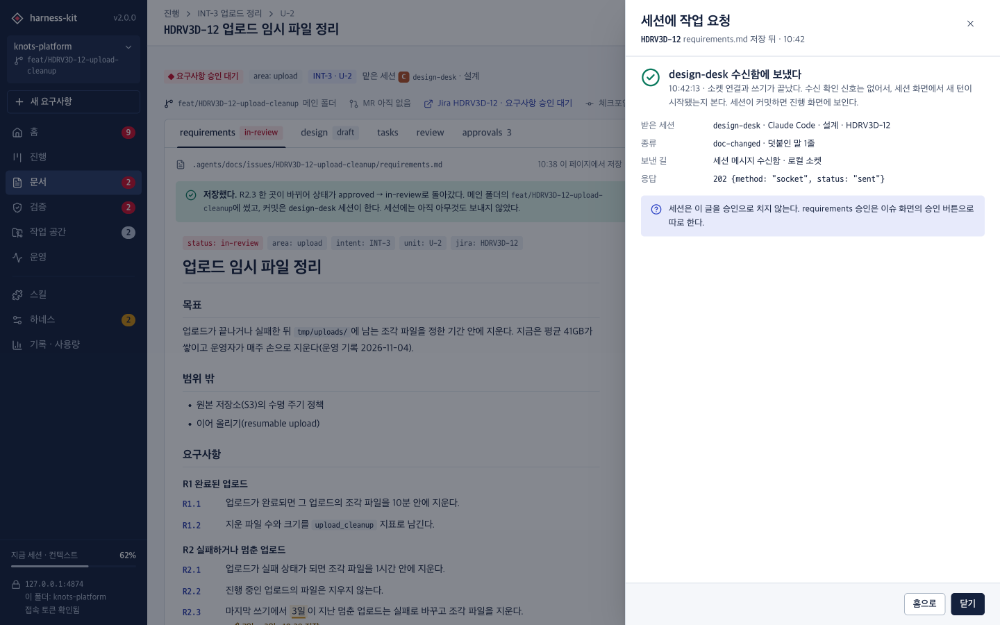
보냄 · 202 sent. 수신 확인 신호가 없다는 것을 그대로 말한다.
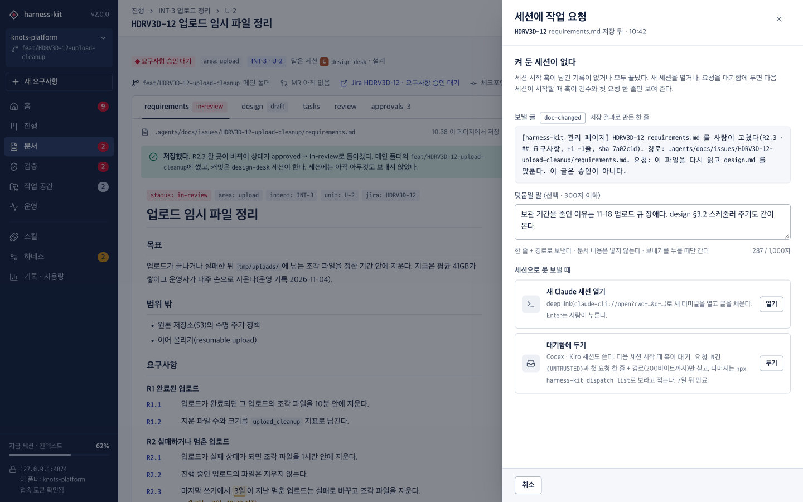
빈 · 살아 있는 세션 0. 대체 길 두 가지만 남긴다.
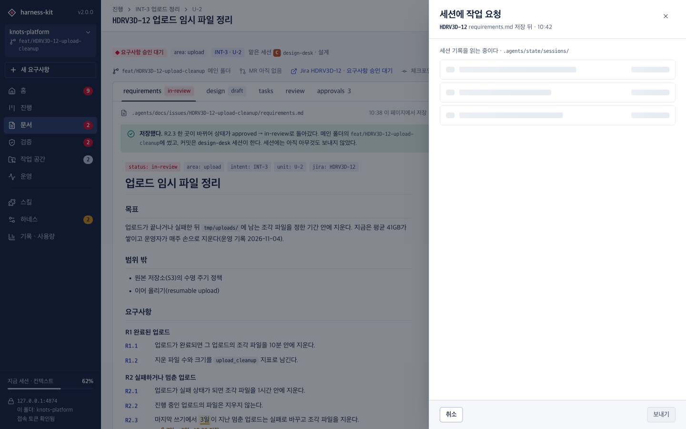
로딩 · 세션 기록과 생존 확인 중. 보내기 비활성.
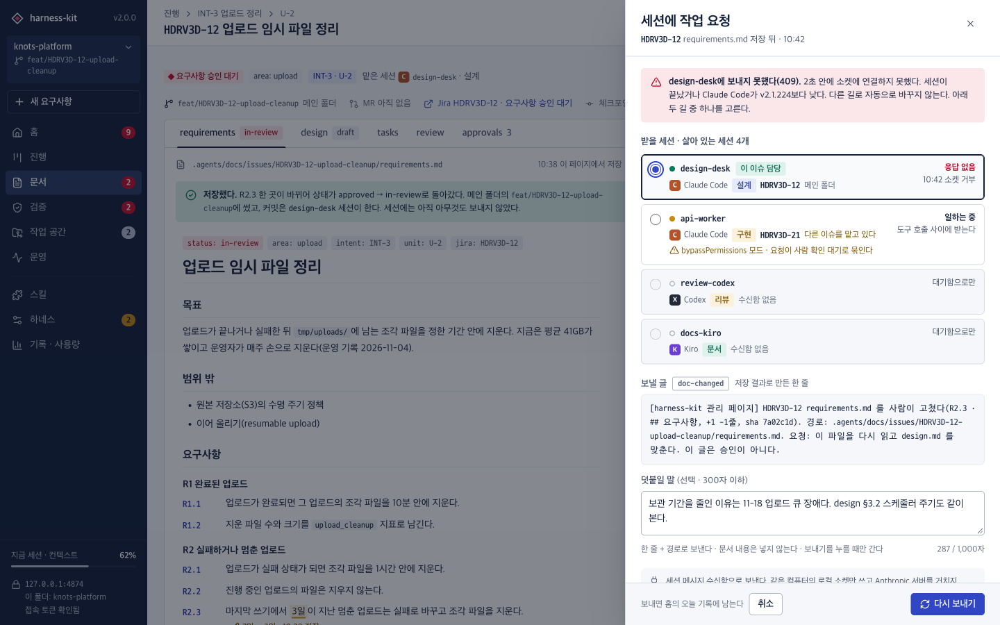
오류 · 409(소켓 연결 실패). 자동으로 다른 길로 바꾸지 않고 사람이 고르게 한다.
읽기 전용(에이전트 세션에서 연 서버): 세션 요청도 쓰기라 보내지 않는다. 시트 위에 "읽기 전용 · 에이전트 세션에서 실행" 띠, 대체 길은 숨기고 "보낼 수 없음"(꺼짐)만 둔다.
직접 눌러 보기세션 고르기 · 보내기
S06검증
Link · /verify쓰기 · 리뷰 판단 · PIN개발자 · QA
목적
품질 게이트 · 단계별 시간 · 정적 분석 · 리뷰 지적을 한곳에서 보고 판단한다.
핵심 동작
레벨 탭, 느린 단계 찾기, 검증 시간 · 지표 추이 보기, 리뷰 판단(PIN)
데이터
GET /verify?issue= · /reports/summary · /reports/findings · verify 기록
SonarQube 대시보드 자리를 맡는다. 체크아웃마다 마지막 검증의 단계별 시간으로 느린 단계를 찾고, 오픈소스 도구 결과(SARIF)로 품질 게이트 · 새 문제 · 기준선을 보고, 리뷰 지적을 판단한다. 품질 게이트는 새로 생긴 문제만 막는다.
S06 · feat/HDRV3D-21 · changed 레벨
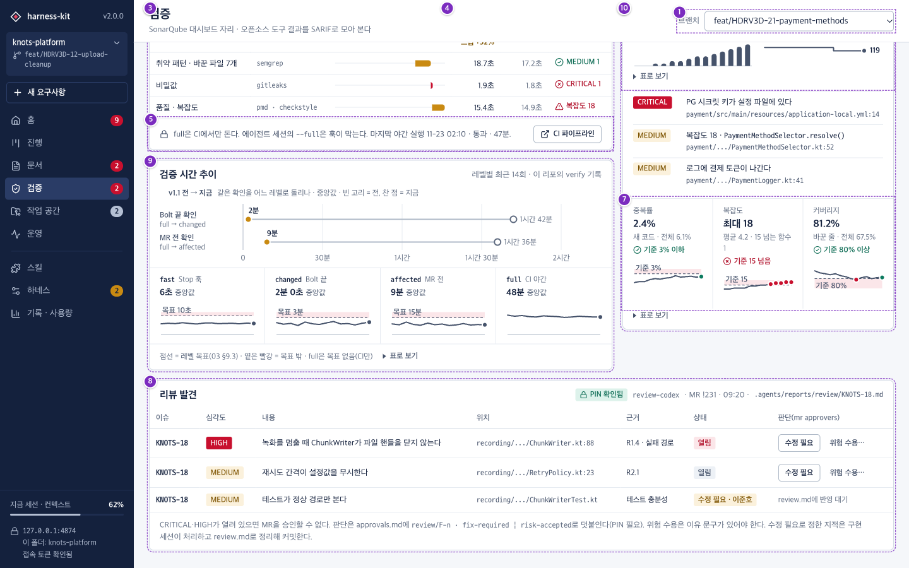
아래로 내린 모습 · 검증 시간 추이(영역 9) · 지표 작은 그림과 리뷰 발견 · 판단영역 설명 10번호 = 캡처의 보라 번호
번호
영역
설명 · 동작
데이터 출처
권한
1
브랜치 고르기
체크아웃(메인 · worktree)마다 마지막 검증. develop은 CI 야간 결과.
GET /verify?issue=
보기
2
품질 게이트
판정과 조건 4개(새 CRITICAL · 새 코드 중복 · 함수 복잡도 · 바꾼 줄 커버리지). 값 · 기준 · 미터(검은 눈금 = 기준). 통과 못 한 조건은 빨강 + ✕ 아이콘.
GET /reports/summary · quality-gate.json
보기
3
단계별 시간
단계 · 도구 · 시작 위치와 길이 막대(0~전체 초) · 걸린 시간 · 최근 7회 중앙값 · 결과. 중앙값보다 30% 넘게 느리면 "느림 +N%". 실패 단계 막대는 빨강.
verify-last.json steps[]
보기
4
레벨 탭
fast · changed · affected · full(CI). 그 레벨의 마지막 실행으로 바꾼다.
verify?level=
보기
5
full 안내
full은 CI에서만 돈다는 것과 마지막 야간 실행 결과 · CI 링크.
verify.fullOnlyInCI
보기
6
정적 분석
심각도별 새로 생김 · 기준선 · 도구, 새 문제 목록(위치 경로). 심각도는 색 네모 + 글자.
GET /reports/findings?new=1
보기
7
지표
중복률(새 코드 · 전체) · 복잡도(최대 · 평균 · 기준 넘는 함수) · 커버리지(바꾼 줄 · 전체).
reports/summary.metrics
보기
8
리뷰 발견
이슈 · 심각도 · 내용 · 위치 · 근거(R# · 엣지 케이스 종류) · 상태 · 판단(수정 필요 · 위험 수용…). 위험 수용은 이유 문구 입력 창이 열린다.
GET /reviews/{key} · POST /reviews/{key}/{id}/decision
mr approvers + PIN
9
검증 시간 추이
덤벨: v1.1 전(빈 고리, 루트 full 1시간 42분 · 1시간 36분) → 지금(찬 점, changed 2분 · affected 9분). 레벨별 작은 그림 넷(fast · changed · affected · full): 최근 14회 걸린 시간과 중앙값, 점선 = 레벨 목표(03 §9.3), 옅은 빨강 = 목표 밖. 표로 보기.
GET /api/v1/verify/history?level=&n=14 (제안) · 킷 도입 전 verify 로그
보기
10
새로 생김 · 기준선 추이
이 체크아웃 최근 14회 changed의 새 문제 수(막대)와 기준선 수(계단선). develop에 맞추면 기준선을 다시 센다.
findings 기록(같은 history)
보기
상태
상태
표시
빈
검증 기록 없음: "이 체크아웃에서 아직 verify.sh를 돌리지 않았다 · Bolt 끝에 changed가 돈다". SARIF 없음: 정적 분석 패널에 설치 안 된 도구와 설치 안내 링크.
로딩
게이트 띠 · 표 뼈대.
오류
verify-last.json 형식 오류 · SARIF 변환 실패: 그 패널에만 원인 경로와 다시 읽기.
직접 눌러 보기S06-verify.html
S07작업 공간
Link · /workspace쓰기 없음 · 명령 복사개발자
목적
worktree 한도 · 용량 · 끝의 정의 판정과 세션 점유를 본다.
핵심 동작
IDE로 열기, 끝내기 명령 복사, 정리 동의 뒤 gc 명령 복사
데이터
GET /worktrees · /sessions
worktree 목록 · 용량 · 끝의 정의 판정과, 켜 둔 세션 · 점유 파일을 본다. IDE가 submodule worktree를 못 보여 줄 때 여기서 본다. 정리는 화면이 하지 않고 명령을 복사해 사람이 터미널에서 실행한다(06 §3.4, DB-R10).
S07 · 한도 3/3, 정리 대기 2영역 설명 5번호 = 캡처의 보라 번호
번호
영역
설명 · 동작
데이터 출처
권한
1
한도 · 용량
git.maxPerRepo 칸(사용 중 앰버 · 정리 대기 빨강), 합계 용량 막대와 경고 기준 눈금, 한도가 차면 "wt new가 막는다" 알림.
GET /worktrees
보기
2
worktree 표
이슈 · 경로 · 브랜치(submodule이면 도메인 리포) · 변경 · push · 용량 · 마지막 사용 · 세션 · 동작. 메인 폴더 줄은 맨 위에 옅은 바탕. IDE로 열기는 vscode:// · idea:// 링크. 끝내기는 명령 복사이고, 끝의 정의를 만족하지 않으면 비활성 + 이유 툴팁.
worktrees[]
보기
3
정리 목록
wt gc 미리 보기. 항목마다 끝의 정의 3조건.
worktrees[].done
보기
4
정리 확인
동의 체크를 해야 gc --apply 명령이 진해지고 복사 버튼이 켜진다. 에이전트는 사람이 요청할 때만 --apply를 쓴다는 문구.
없음
보기
5
세션 · 점유
세션 · 역할 · 이슈 · 폴더 · 상태 · 점유 경로. 메인 폴더는 쓰는 세션 하나만이라는 규칙을 "쓰기 차례 대기"로 보인다.
GET /sessions
보기
상태
상태
표시
빈
worktree 0: "메인 폴더 하나로 일하고 있다. 동시에 쓰는 세션이 둘 이상일 때 wt new <키>로 만든다".
로딩
용량은 늦게 온다: 표를 먼저 그리고 용량 칸만 "계산 중".
오류
git worktree list 실패 · 사라진 경로(prunable): 그 줄에 "폴더 없음 · git worktree prune" 명령.
직접 눌러 보기정리 확인 체크
S08스킬
Link · /skills쓰기 없음 · 내보내기 제외개발자
목적
이 컴퓨터의 스킬을 하네스와 단계로 본다.
핵심 동작
단계 · 하네스 거르기, 단계별 추천, 단계 × 하네스 빈 칸 보기
데이터
GET /skills?stage=&harness= · skill-map.json
이 컴퓨터에 흩어진 스킬이 어느 하네스에서 되는지, 흐름의 어느 단계에 쓸 만한지 본다. 킷이 아는 스킬은 스킬 지도로, 모르는 스킬은 설명 낱말로 단계를 추정하고 "추정"으로 표시한다.
이름 · 설명 · 쓸 수 있는 하네스(표지) · 출처 · 단계(지도 · 추정) · 이름 겹침.
skills[]
보기
4
이 단계에서 쓸 내 스킬
그 단계의 킷 명령마다 지도에 있는 스킬과 설치 여부. 없으면 "킷 기본 템플릿". 지도는 MR로 고친다.
skill-map.json · skills[]
보기
5
단계 × 하네스
단계가 붙은 스킬을 단계 · 하네스별로 센 표. 칸 막대는 같은 눈금, 0은 막대 없이 0. 빈 칸 수와 "그 단계는 킷 기본 템플릿을 쓴다". 단계를 누르면 2 거르기가 바뀐다. 마우스를 올리면 그 칸의 스킬 이름.
GET /skills?stage=&harness=
보기
상태
빈(스킬 폴더 0) "읽을 스킬 폴더가 없다 · 프로젝트 스킬만 쓴다", 로딩 "스킬 폴더 9곳을 읽는 중(최대 수 초)", 오류 "읽을 수 없는 폴더 · 권한" 줄. 거르기 결과 0건은 표 안에 빈 안내.
직접 눌러 보기단계 · 하네스 거르기
S09하네스
Link · /harness쓰기 없음 · 읽기만운영 · 개발자
목적
doctor · 버전 · 흐름 설정 · 승인 권한 · 역할 · 확장 층을 읽는다.
핵심 동작
명령 복사, 버전 흐름 보기, 최신 확인(버튼)
데이터
GET /harness · POST /harness/outdated
킷 설치 상태(doctor), 킷 · 팩 · 모듈 · 하네스 버전과 업데이트, 게이트별 승인 권한, 역할 배정, 확장 층이 무엇을 덮었는지, 흐름 설정을 본다. 설정은 화면에서 바꾸지 않는다. 바꾸는 곳(harness-kit.json · MR)과 터미널 명령을 복사하게 한다.
S09 · doctor 경고 2 · 배포 게이트 approvers 비어 있음영역 설명 7번호 = 캡처의 보라 번호
번호
영역
설명 · 동작
데이터 출처
권한
1
doctor
통과 · 경고 · 실패 수, 경고를 위로. 항목마다 위치와 고치는 명령(복사). 통과는 하나만 보이고 나머지는 "더 보기".
GET /harness
보기
2
버전 · 업데이트
킷 · 회사 팩 · AI-DLC · Entire · Claude Code. 설치 · 최신 · 상태 · 올리는 방법. 최신 확인은 네트워크라 버튼으로만.
POST /harness/outdated
보기
3
흐름 설정
flow.design(kit · aidlc) · flow.record(none · entire) · 게이트 레일 · 줄일 수 없는 게이트(자물쇠) · verify. 비활성 구분 선택으로 현재 값만 보인다.
harness.config
보기
4
승인 권한
머리에 이 체크아웃의 git 사용자(git config user.email). 게이트 묶음마다 approvers(그룹 이름과 이메일 수, 또는 이메일)와 이 git 사용자가 승인할 수 있는지. approvers가 비어 있거나 키가 없으면 "비어 있음 → 이 리포 git 사용자 누구나". 이메일 목록 · 사람 이름은 펼치지 않는다. 바닥 한 줄: 로그인 · 회원 정보는 없고 사람 확인은 터미널 PIN이다.
harness.approvers · groups · session.gitUser
보기
5
역할 배정
역할 → 하네스 → 역할 파일 → 지금 세션. 개인 층의 roles 덮기 여부는 머리에. 승인자는 4에서만 본다.
harness.roles
보기
6
확장 층
킷 · 회사 팩 · 프로젝트 · 개인 층별 파일 수와 덮은 것 · 더한 것 · 무시한 것.
harness.layers (lock owner)
보기
7
버전 흐름
10월부터 킷 · 회사 팩 · Claude Code가 낸 판(빈 점)과 이 리포에 깔린 판(막대, 지금 판은 상태 색), 오른쪽에 "N일 뒤 · 최신" 글. 꺼진 모듈(AI-DLC · Entire)은 뺀다.
harness-kit.lock 설치 기록(git log) · POST /harness/outdated
보기
상태
빈(lock 없음) "킷이 설치되지 않았거나 v1 lock이다 · npx harness-kit init 또는 update", 로딩 doctor 뼈대, 오류 doctor 실행 실패 시 원인과 "터미널에서 doctor를 직접 돌린다".
직접 눌러 보기S09-harness.html
S10운영 기록
Link · /ops쓰기 없음 · 접수는 S11선택 화면운영 · PO
목적
배포 · 장애 · 메모와 전달 지표를 보고 다음 요구사항을 고른다.
핵심 동작
기간 고르기, 다섯 지표를 기준선과 비교, 후보를 요구사항으로
데이터
GET /ops(delivery · baseline) · npx harness-kit metrics
전달 지표 다섯 개를 킷 도입 전 기준선과 비교하고, 배포 · 장애 · 운영 메모를 시간순으로 보고, 다음 요구사항을 고른다. 장애의 후속 이슈로 바로 간다. 고른 후보는 새 요구사항 접수(S11)로 넘긴다. 이 화면은 쓰지 않는다.
S10 · 30일영역 설명 4번호 = 캡처의 보라 번호
번호
영역
설명 · 동작
데이터 출처
권한
1
기록
배포(청록) · 장애(빨강, 등급) · 메모. 승인한 git user.name · 시각 · 영향 · 후속 이슈 · 원본 경로.
"새 요구사항 접수" 버튼 하나. 글 · 첨부 · 종류는 S11에서 받는다(접수 경로를 한 곳으로 모음).
없음(S11로 이동)
보기
4
전달 지표
리드 타임 · 배포 실패율 · 복구 시간 · 승인 대기 시간 · 재작업 비율(14 §3.10). 큰 수 = 고른 기간 값(7일 · 30일 · 전체)과 표본 수, 작은 그림 = 주마다 지난 30일 값 8주, 점선 = 기준선(킷 도입 전 90일, git 계산). 기준선이 없거나 계산 방법이 다르면 "계산 방법 다름"과 이유를 쓰고 숫자만 나란히 두지 않는다. 다섯 다 낮을수록 좋다.
요구사항을 글과 첨부로 받거나 Jira · Notion에서 가져와 Intent(버그는 이슈)로 접수한다. 레일 맨 위 "새 요구사항"으로 들어온다. 받은 원문은 intents/<INT>-<이름>/intake.md와 attachments/에 그대로 남고(08 §3.11), 범위 · 질문 · Unit은 설계 세션이 /hx-intent로 만든다. 접수는 승인이 아니라 토큰만 쓰고 PIN은 묻지 않는다(06 §3.8.1).
S11 직접 작성 · 신규 프로젝트 · 첨부 5개
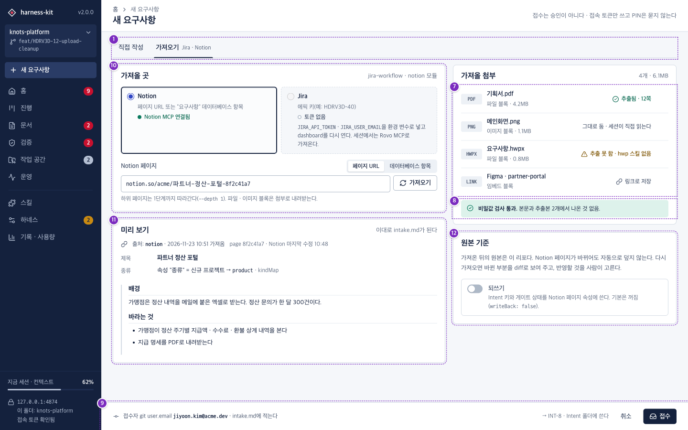
가져오기 탭 · Notion 페이지 미리 보기 · Jira는 토큰 없음영역 설명 12번호 = 캡처의 보라 번호
번호
영역
설명 · 동작
데이터 출처
권한
1
접수 방법 탭
직접 작성 · 가져오기(Jira · Notion). 화살표 · Home · End로 옮긴다. 어느 탭이든 접수 결과 형식은 같다.
없음
보기
2
종류
신규 프로젝트(처음부터) · 신규 기능 · 기능 변경 · 버그. 앞의 셋은 Intent를, 버그는 이슈 폴더를 바로 만든다. 신규 프로젝트를 고르면 "첫 Unit은 걷는 뼈대(빌드 · 테스트 · verify · CI만 도는 최소 앱), 스택 · 아키텍처는 세션에서 hx-bootstrap으로 고른다"를 보인다(08 §3.12).
kind: product · feature · change · bug
토큰
3
제목
한 줄. Intent 폴더 이름의 뒷부분이 된다.
title
토큰
4
본문
Markdown 편집기, 쓰기 · 미리 보기 전환. 원문은 고치지 않고 intake.md에 남긴다.
body
토큰
5
링크
Jira 키 · Figma · URL. attachments.json에 "링크로 저장". Figma MCP가 있으면 설계 세션이 가져온다.
links[]
토큰
6
첨부 놓는 곳
끌어 놓기 · 파일 고르기. 제한 "파일 20MB · 합계 100MB"를 늘 보인다. 넘는 파일은 링크로 받거나 git LFS를 쓰라고 안내한다(413).
files[]
토큰
7
파일 목록
파일마다 종류 · 크기 · 추출 상태: 추출됨(PDF 쪽 수, 엑셀 시트 → 표) · 그대로 둠(이미지 · YAML 같은 텍스트) · 추출 못 함(hwp 스킬 없음, 앰버) · 링크로 저장. 빼기 버튼. 아래에 합계 막대.
응답 files[].extracted · attachments.json
토큰
8
비밀값 검사
gitleaks로 텍스트 첨부와 추출본을 본 결과 한 줄. 비밀값이 나오면 그 파일 줄이 빨갛게 바뀌고 접수를 막는다(422). 주민등록번호 · 전화번호 패턴은 경고만.
warnings · 422
보기
9
바닥줄
기록될 신원 한 줄("접수자 git user.email jiyoon.kim@acme.dev · intake.md에 적는다"), 만들 키(→ INT-8, 버그면 이슈 키) · 취소 · "접수". 접수 뒤에는 "INT-8 접수됨 · 아직 보내지 않았다 · 설계 세션(design-desk)에 /hx-intent INT-8 요청을 보낼까"와 지금 보내기 · 나중에. 접수만으로는 세션에 보내지 않는다.
POST /intake → POST /dispatch
토큰
10
가져올 곳 · 연결 상태
Jira(에픽 키, 예: HDRV3D-40) · Notion(페이지 URL 또는 "요구사항" 데이터베이스 항목). 카드마다 연결 상태: Jira "Rovo MCP 연결됨" / "토큰 없음", Notion "Notion MCP 연결됨" / "NOTION_TOKEN 없음". 연결이 없으면 카드를 끄고 설정 방법(환경 변수 이름, 다시 열기)을 보인다. 토큰은 리포 · harness-kit.json에 쓰지 않는다.
jira-workflow · notion 모듈 상태
보기
11
미리 보기 · 출처 줄
가져올 제목, 속성에서 대응한 종류(kindMap, 예: "신규 프로젝트 → product"), Markdown으로 바꾼 본문. 출처 줄 "출처: notion · 2026-11-23 10:51 가져옴"은 intake.md 머리 source로 남는다.
source: {type, ref, url, importedAt, version}
보기
12
원본 기준 · 되쓰기
가져온 뒤의 원본은 리포다. 다시 가져오면 바뀐 부분을 diff로 보여 주고 사람이 반영할 것을 고른다. "되쓰기" 스위치(기본 꺼짐)를 켜면 Intent 키와 게이트 상태를 외부 문서 속성에 쓴다.
writeBack
토큰
상태
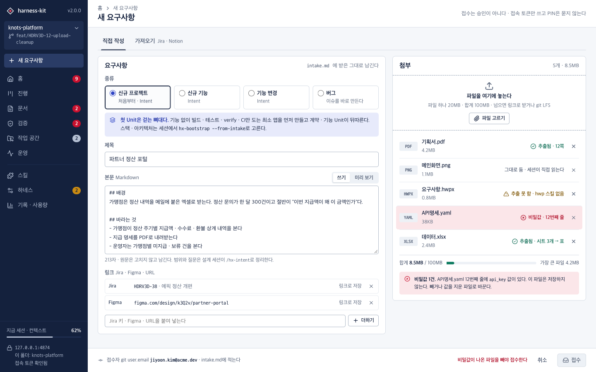
오류 · 파일 하나에 비밀값(422). 그 파일 줄과 검사 줄이 빨갛고 "접수"가 꺼진다. 20MB를 넘는 파일(413)도 같은 자리에 "20MB 넘음 · 링크로 받거나 git LFS"로 보인다.
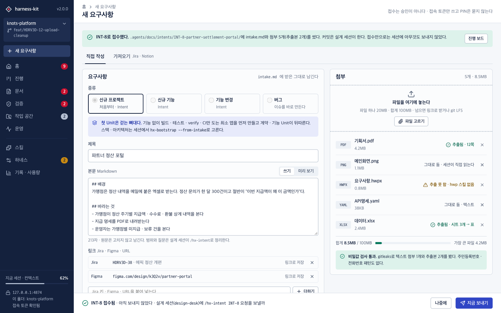
접수함 · 201. 폼은 잠기고, 바닥줄이 "/hx-intent INT-8 요청 보내기 · 지금 보내기 · 나중에"로 바뀐다. 나중에 고르면 세션에서 직접 부른다.
상태
표시
연결 없음
가져오기 탭에서 도구가 연결되지 않았으면 그 카드를 끄고 설정 힌트만(위 캡처의 Jira). 둘 다 없으면 "직접 작성으로 접수한다. 출처가 없어도 접수된다".
다시 가져오기
같은 출처를 다시 가져오면 미리 보기 자리에 바뀐 줄 diff와 반영할 묶음 고르기. 고르지 않은 것은 리포 원본 그대로.
읽기 전용
에이전트 세션에서 연 서버: 레일의 새 요구사항이 꺼지고, 열려 있으면 "접수"가 꺼진다.
직접 눌러 보기종류 · 미리 보기 · 탭 · 접수
S12진행 · 흐름 · Intent → Unit 의존
Link · /progress?view=flow쓰기 · 변경 제안만 · PIN 없음PO · 개발자
목적
Intent의 Unit 의존을 캔버스로 보고 바꿀 것을 제안한다.
핵심 동작
거르기, Unit 고르기, 남은 Bolt 보기, 변경 제안 저장
데이터
GET /api/v1/flow?intent= · POST /api/v1/units/proposals
Intent 하나의 Unit을 의존 순서대로 캔버스에 그린다. 자리는 units.json의 dependsOn에서 계산하고(기능 Unit은 의존 깊이로 열, 계약 Unit은 위 띠), 상태는 이슈 문서 머리 · 승인 기록 · 검증 결과 · 세션 목록에서 계산한다. S02 보드와 같은 데이터를 다른 모양으로 보이고, 머리줄의 보드 · 흐름으로 오간다. 관리 페이지는 units.json을 쓰지 않는다. 의존 · 나누기 · 합치기 · 순서를 바꾸고 싶으면 편집 도구줄로 변경 제안(units.proposed.json)을 저장하고, intent 게이트 승인 뒤에 반영된다(2단계 · 게이트 뒤). 캔버스는 React Flow(@xyflow/react, MIT)를 정적 파일(assets/vendor/flow.bundle.js)로 묶어 싣는다. CDN을 쓰지 않고, CLI는 런타임 의존성 0을 그대로 지킨다(번들은 화면 파일일 뿐이다).
S12 기본 · INT-7 · 1440×900 · 영역 번호 표시
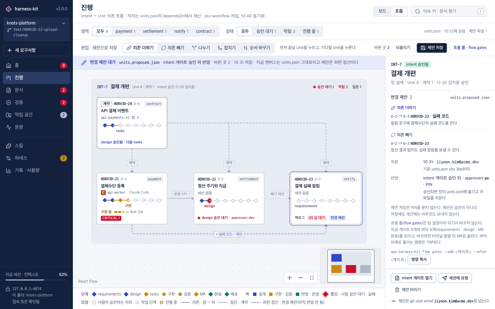
변경 제안 · ?state=proposal · 의존 더하기 1 · 빼기 1 · 영역 번호 9~12영역 설명 13번호 = 캡처의 보라 번호
번호
영역
설명 · 동작
데이터 출처
권한
1
거르기 줄
영역(area) · 상태(승인 대기 · 막힘 · 진행 중)로 거른다. 빠진 노드는 지우지 않고 흐리게 남겨 의존이 끊겨 보이지 않게 한다. 결과 수와 "거르기 풀기". 선택은 URL(?area= · ?st=)에 남긴다. 오른쪽 끝에 읽은 파일과 시각.
GET /api/v1/flow?intent=INT-7 → nodes[].data.area · flags
보기
2
Intent 머리
키 · 이름 · Unit 수 · 계약 수 · intent 승인(날짜 · git user.name), 승인 대기 · 막힘 · 질문 수. Intent는 모든 Unit을 감싸는 옅은 영역이다.
nodes[type=intent]
보기
3
Unit 노드
이슈 키 · Unit · area · 제목 · 맡은 세션(하네스 표지, 없으면 "세션 없음") · 게이트 레일 · 상태 글자 · Bolt 칸 · 막는 것(CRITICAL · 질문). 노드 안에는 누를 것을 두지 않는다. 누르거나 Enter · Space로 고르고 Esc로 푼다(?sel=U-1).
nodes[type=unit]
보기
4
계약 Unit · 계약 선
계약 Unit은 위 띠에 점선 테두리 + "계약" 표지와 주는 계약(api · event) 첫 줄. 계약 선은 점선으로, 그 계약을 쓰는 Unit의 위로 들어가고 "계약" 표지(마우스를 올리면 쓰는 계약 이름).
nodes[type=contract-unit] · edges[kind=contract]
보기
5
게이트 레일
여덟 단계(requirements · design · tasks · 구현 · 검증 · MR · 완료 · 배포). 마름모 = 사람이 승인하는 자리, 동그라미 = 작업 단계, 빨강 = 사람 승인 대기. 지난 구간은 단계 색, 지금 자리 이름만 아래에 쓴다.
nodes[].data.steps · flow.gates
보기
6
미니맵 · 조절
확대 · 축소 · 전체 보기. 미니맵을 누르거나 끌어 화면을 옮긴다. 처음 열 때와 창 크기가 바뀔 때 위에 붙여 맞추고, 사람이 움직였으면 그대로 둔다. 좁은 화면에서 Unit을 고르면 판이 옆에 붙고 고른 노드만 드러낸다.
없음
보기
7
범례
단계 표지 · 색(설계 · 구현 · 검증 · 반영 · 운영 · 빨강) · 모양(승인 자리 · 작업 단계 · 진행 중) · 선(의존 · 계약, 제안 상태면 변경 제안). 색만으로 말하지 않고 글자를 같이 둔다.
없음
보기
8
오른쪽 판
고른 것이 없으면 Intent 요약(처리할 일 · 남은 일 · Unit별 Bolt가 붙은 의존 순서 · 읽은 파일), 고르면 그 Unit의 처리할 일 · 게이트 · 연결(세션 · 먼저 끝날 것 · 기다리는 Unit · 브랜치)과 행동: 열기(S03) · 세션에 요청(S05, 사람이 고를 때만) · 승인 (PIN). 승인할 수 없으면 이유 한 줄. 기록될 git user.email 한 줄.
GET /api/v1/flow · GET /issues/{key}
승인은 approvers(비면 누구나) + PIN
9
변경 제안 띠
"변경 제안 대기 · units.proposed.json · intent 게이트 승인 뒤 반영", 바뀐 곳 수 · 저장 시각. 캔버스는 units.json 그대로이고 제안은 겹쳐 그린다.
units.proposed.json
보기
10
편집 도구줄
의존 더하기 · 의존 빼기 · 나누기 · 합치기 · 순서 바꾸기(고른 도구의 쓰는 법 한 줄), 바뀐 곳 수 · 되돌리기 · 제안 저장 · 흐름 틀(flow.gates) 링크(지금 게이트와 바닥 4개를 보이고, 바꾸는 길은 npx harness-kit flow gates --add <게이트> --after <게이트> 복사 뒤 MR. 관리 페이지는 flow.gates를 바꾸지 않고 제안도 받지 않는다). 제안 저장은 PIN을 묻지 않는다(제안은 승인이 아니다). 저장해도 세션에 보내지 않는다. 계약 Unit은 합치지 않는다. dependsOn 고리가 생기는 제안은 저장할 때 거부한다(422).
POST /api/v1/units/proposals {intent, baseSha256, changes[]} · PIN 불필요
토큰
11
제안 선 · 제안 표지
더할 의존은 파란 점선(아래로 돌아 가운데 Unit을 덮지 않는다)과 "+ 실패 코드 · 제안" 표지, 뺄 의존은 성긴 점선과 "빼기 제안" 표지. 제안이 건드리는 Unit은 파란 점선 테두리와 "변경 제안" 표지.
바뀐 곳마다 무엇 · 왜, 저장한 git user.email · 기준 units.json sha, 반영 조건(intent 게이트 · approvers po · PIN, 승인되면 킷이 units.json에 옮기고 제안 파일을 지운다). intent 게이트 열기 · 세션에 요청(고를 때만) · 제안 버리기. 흐름 틀(flow.gates)은 팀 설정이라 여기서 바꾸지 않는다: 지금 게이트와 바닥 4개(requirements · design · MR · 완료)를 보이고, 사람 터미널에서 npx harness-kit flow gates --add … 뒤 MR로 올리는 명령을 복사하게 한다. 바닥 아래로 줄이는 명령은 거부된다(06 §3.16).
units.proposed.json · flow.gates
버리기는 토큰
13
남은 일
Intent 요약 판: 남은 Bolt / 전체 · 끝난 Unit과 14일 계단선(캔버스에는 그리지 않는다). 의존 순서 줄마다 Unit별 Bolt 칸(추정은 빈 칸)과 수.
GET /api/v1/intents/{key}/burn?days=14 (제안) · units[].bolts
보기
데이터: GET /api/v1/flow?intent=INT-7는 nodes[](type intent · unit · contract-unit)와 edges[](kind depends · contract)를 준다. 같은 결과를 콘솔에서 npx harness-kit status --flow --json으로 본다. 제안 저장은 POST /api/v1/units/proposals이고 PIN이 필요 없다. 반영은 intent 게이트 승인(POST /approvals, PIN)으로만 된다.
상태
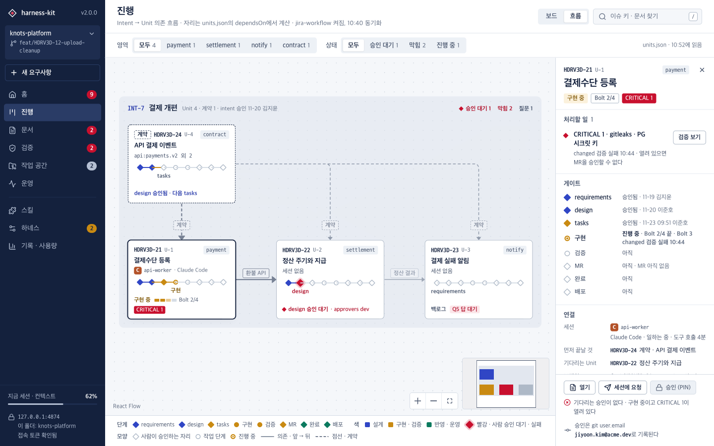
Unit 고름 · ?sel=U-1. 이어진 선을 굵게, 판은 그 Unit의 처리할 일 · 게이트 · 연결 · 행동. 승인이 없으면 이유 한 줄.
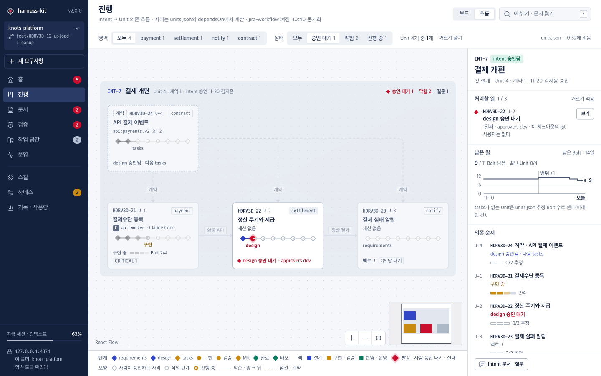
거르기 · ?st=wait. 맞는 Unit만 진하게, 나머지는 흐리게 남긴다(글자 대비는 지킨다). 판의 처리할 일도 거른 수로.
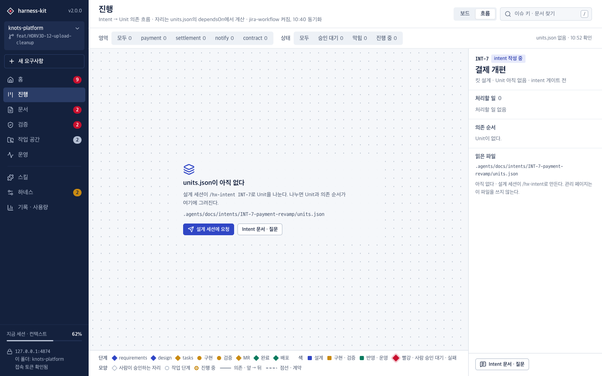
빈 Intent · units.json이 아직 없다. 설계 세션이 /hx-intent로 나눈다. "설계 세션에 요청"은 사람이 누를 때만 간다.
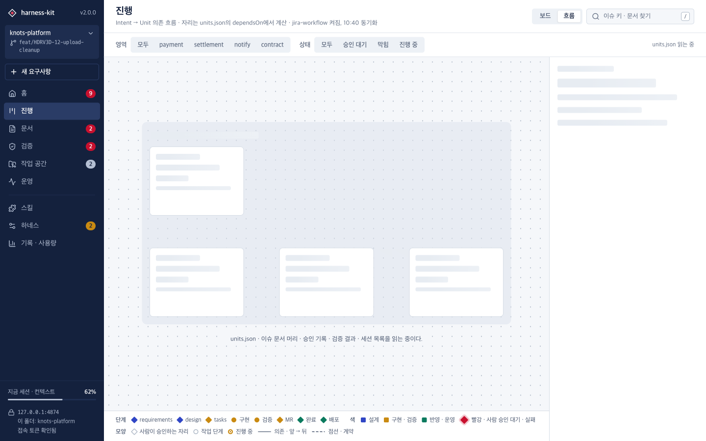
로딩 · 실제 배치와 같은 계산으로 뼈대 블록을 놓아 읽은 뒤 자리가 튀지 않는다.
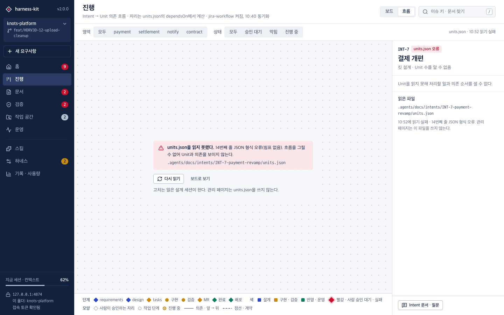
오류 · units.json 형식 오류. 그리지 않고 원인 줄과 다시 읽기 · 보드로 보기. 고치는 일은 설계 세션이 한다.
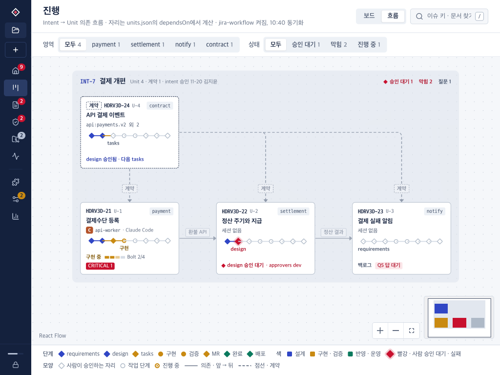
1024×768 · 고른 것이 없으면 캔버스가 다 쓰고, 고르면 판이 옆에 붙는다(캔버스를 덮지 않는다).
읽기 전용(?state=readonly): 세션에 요청 · 승인이 꺼지고 이유 한 줄. 편집 도구줄도 꺼진다.
직접 눌러 보기거르기 · Unit 고르기 · 미니맵 · 변경 제안
S13기록 · 사용량
Link · /usage쓰기 없음 · 내보내기 제외개발자 · PO
목적
대화 기록으로 토큰 사용량과 지금 세션의 컨텍스트를 본다.
핵심 동작
기간 · 프로젝트 · 하네스 거르기, 툴팁 · 표로 보기, 프롬프트 기록 찾기
데이터
GET /usage?days= · /usage/now · /history?q=
이 컴퓨터의 대화 기록을 읽어 토큰이 어디에 쓰였는지와 지금 세션의 컨텍스트가 얼마나 찼는지를 본다. 원본은 Claude Code ~/.claude/projects/…/*.jsonl · ~/.claude/history.jsonl, Codex ~/.codex/sessions이고 Kiro는 기록 위치를 확인하기 전까지 "자료 없음"이다. 읽기만 하고 복사본을 남기지 않으며, 이 컴퓨터에서만 보이고 내보내기(--export) · 커밋 · 세션 요청에 넣지 않는다. 끄는 곳은 리포가 아니라 이 컴퓨터 설정(~/.config/harness-kit/config.json의 "history")이다. 레일 바닥의 "지금 세션 · 컨텍스트 62%" 줄이 이 화면으로 온다. 관리 페이지는 모델을 부르지 않고, 킷이 세션에 덧붙인 양을 원칙 10의 상한(세션 시작 출력 2,560바이트)과 같이 보인다.
S13 사용량 탭 · 7일 · knots-platform · 영역 번호 표시영역 설명 11번호 = 캡처의 보라 번호
기간(오늘 · 7일 · 30일) · 프로젝트(이 프로젝트 · 모든 프로젝트) · 하네스. 한 줄이 아래 차트 · 표 · 기록 모두에 같이 걸린다.
GET /api/v1/usage?days=7&project=&harness=
보기
3
읽는 곳
원본 경로와 파일 수(Claude Code 세션 · 프롬프트, Codex 세션, Kiro 확인 필요), "읽기만 · 이 컴퓨터에서만", 내보내기 · 커밋 · 세션 요청 제외, 끄는 설정과 지금 값(켜짐). 못 읽은 원본은 그 자리에 "읽지 못함".
usage.sources[] · npx harness-kit usage --sources
보기
4
하루 토큰 · 역할별
쌓은 세로 막대(아래부터 설계 · 구현 · 리뷰, 2px 틈). 토큰은 입력 · 출력 · 캐시 읽기 · 캐시 쓰기 합. 범례 + 오늘 막대 옆 직접 이름, 가장 많은 날과 오늘만 값. 날마다 누르거나 Tab으로 고르면 역할별 값이 툴팁에 나온다. "표로 보기"에 전부. 역할은 세션 등록의 role, 색은 단계 색(설계 파랑 · 구현 앰버 · 리뷰 진한 앰버).
GET /api/v1/usage?days=7 → daily[].byRole
보기
5
이슈별 토큰
가로 막대(큰 것부터, 한 색), 끝에 값. 이슈는 세션 등록과 대화 기록의 gitBranch에서 찾고, 못 찾으면 "이슈 없음"으로 모은다.
usage.byIssue[]
보기
6
캐시 읽기 비율
캐시 읽기 ÷ (입력 + 캐시 읽기 + 캐시 쓰기)를 날마다 선 하나로. 끝점과 가장 낮은 날만 값, 나머지는 세로선이 따라가는 툴팁과 표.
usage.daily[].cacheRatio
보기
7
지금 세션
마지막 요청의 입력 + 캐시 ÷ 모델 컨텍스트 창(124K / 200K = 62%) 막대와 알림 기준 눈금(80%, 설정 usage.warnAt). 넘으면 이 막대와 레일 줄이 앰버. 마지막 요청 분해 · 모델 · 이슈, 다른 세션의 같은 값(창 크기를 모르면 "기록에 없다").
GET /api/v1/usage/now
보기
8
킷이 덧붙인 토큰
세션 시작 훅 출력 크기를 상한과 비교: 고정 안내 1,010/1,024 · 단위 안내(session-context.md) 882/1,024 · 바뀌는 상태 431/512 · 합 2,323/2,560바이트. 7일 세션 시작 횟수 × 크기와 추정 토큰(바이트 ÷ 3), 세션 요청 글 크기. 대화 기록이 아니라 훅 출력 기록에서 세므로 기록 읽기를 꺼도 보인다. 아래 작은 칸 모듈이 덧붙인 양(owner별): kit · external:aidlc · external:entire마다 세션마다 읽는 바이트(입구 파일 + paths 없는 규칙 + 스킬 설명, 예 11,240 · 9,812 · 0 B)와 이벤트별 훅 수(예 aidlc SessionStart +2 · UserPromptSubmit +3 · PreToolUse +7, entire 훅 +2). "킷 상한 밖 · 켠 모듈 몫 · add 때 전후를 보여 준다". 외부 훅의 실제 출력 크기는 대화 기록 읽기를 켜야 센다. 차트 없이 표 하나.
모델 · 하네스 · 쓴 곳(역할 · 세션) · 요청 · 입력 · 출력 · 캐시 읽기 · 캐시 쓰기 · 캐시 비율 · 비용(추정). 비용은 이 컴퓨터 설정의 가격표(usage.pricing)로 계산한 추정이고 청구 금액이 아니다. 킷은 가격표를 관리하지 않아 가격표에 없는 모델은 토큰만.
usage.byModel[] · npx harness-kit usage --json
보기
10
기록 찾기
프롬프트 글 · 이슈 키 찾기, 세션 고르기, 역할(모두 · 구현 · 설계 · 리뷰).
GET /api/v1/history?q=&session=&role=
보기
11
프롬프트 기록
날짜 묶음별 시각 · 프로젝트와 세션(하네스 표지) · 역할 · 이슈 · 프롬프트 두 줄 · 그 턴의 토큰과 요청 수 · 열기(그 이슈 S03 · S04 · S06). 관리 페이지(S05)에서 보낸 글은 "관리 페이지 요청" 표지. 대화 내용은 열지 않고 요약하지 않는다. Kiro는 "자료 없음" 한 줄.
history[] · npx harness-kit history --json
보기
상태
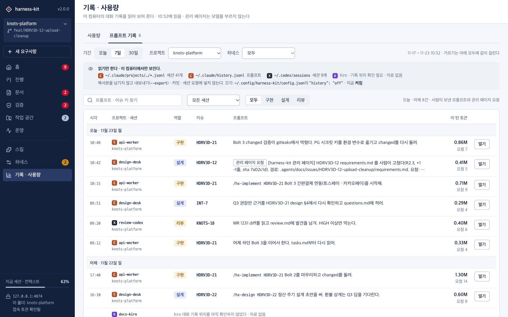
프롬프트 기록 · ?tab=history. 사람이 보낸 프롬프트와 관리 페이지 요청이 시간 역순으로. 열기는 그 이슈 화면으로 간다.
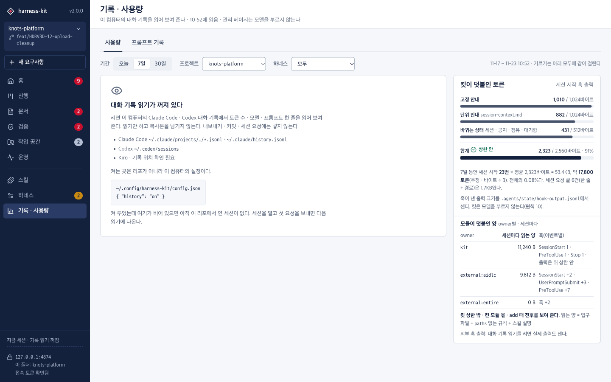
빈 · 꺼짐 · 기록 읽기가 꺼져 있거나 이 리포에서 연 세션이 없다. 무엇을 읽는지와 켜는 곳(~/.config/harness-kit/config.json)을 보이고, 킷이 덧붙인 토큰은 그대로 보인다. 레일 줄은 "지금 세션 · 기록 읽기 꺼짐"이 된다.
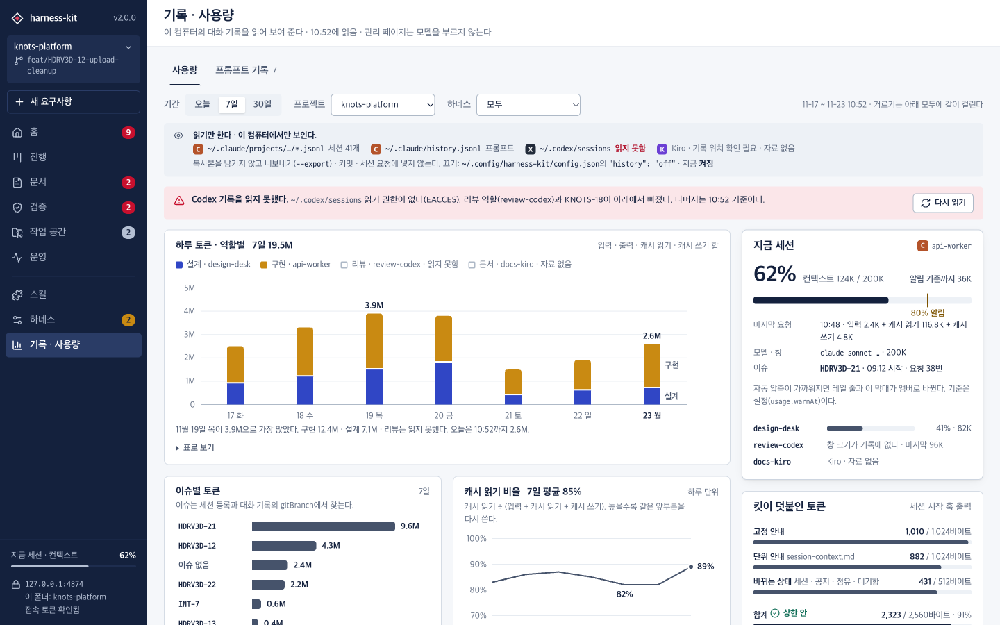
오류 · 원본 하나(~/.codex/sessions, EACCES)를 못 읽음. 리뷰 역할 · KNOTS-18 · Codex 모델 줄이 빠졌다고 말하고 나머지는 그대로 보인다.
상태
표시
로딩
읽는 원본과 파일 수를 말하고 차트 자리에 막대 뼈대. 킷이 덧붙인 토큰은 훅 출력 기록이라 먼저 나온다. 다시 읽을 때는 뼈대 없이 이전 그림을 둔 채 바꾼다.
빈 · 꺼짐
위 캡처. 탭 건수는 숨긴다.
오류
위 캡처. 프롬프트 기록 탭도 같은 띠를 보이고 그 하네스 줄만 뺀다.
알림
지금 세션이 usage.warnAt(예시 80%)을 넘으면 막대 · 레일 줄이 앰버로 바뀌고 "자동 압축이 가깝다"를 붙인다. 색만으로 말하지 않고 글자로도 적는다.
직접 눌러 보기탭 · 막대 · 선 툴팁 · 표로 보기
6핵심 흐름
F1. 문서를 고쳐 저장하고 세션에 요청
S01 · S03문서 열기처리할 일 또는 보드에서 이슈를 연다
S03편집R2.3을 고친다GET /docs (sha)
S03저장 · 저장하고 세션에 요청⌘S는 저장만. 둘 중 사람이 고른다PUT /docs {baseSha256}
S03저장 결과 띠approved → in-review, 쓴 폴더, 커밋은 세션, 아직 보내지 않음
S05세션 고르기"저장하고 세션에 요청"이나 띠의 "세션에 요청"을 누를 때만. 이 이슈 담당 세션이 먼저 골라져 있다
S05보냄doc-changed 한 줄POST /dispatch via socket
분기 · 409 conflict → 내 변경을 지키고 현재 내용과 비교 · 409 lease_held → "그래도 저장"(force)해도 점유 세션에 보내지 않는다. 알리려면 사람이 "세션에 요청"을 고른다 · 409 branch_not_checked_out → wt new <키> 명령 복사 · 소켓 실패(409) → deep link 또는 대기함을 사람이 고른다 · 취소 → 저장은 그대로, 요청만 안 보냄.
F2. 게이트 승인
S01승인 대기내 git 사용자가 승인자인 것, 빨간 "열어서 승인"
S03문서 읽기바뀐 곳 표시, 발견 확인
S03사전 확인질문 0 · CRITICAL·HIGH 0 · 앞 게이트
S03문구 · PIN"반영해 · 승인한다"처럼 행동이 담긴 말, 기록될 git user.email 확인
S03승인하고 기록approvals.md 덧붙임, status approvedPOST /approvals
고를 때만 · S05세션에 approved승인은 보내지 않는다. 사람이 "세션에 요청"을 고르면 한 줄 + 경로. 실패해도 승인은 유지
분기 · 403 not_an_approver → 그 게이트 approvers와 이 체크아웃의 git user.email을 보이고 "수정 요청"만 남긴다 · git user.email이 비어 있으면 403(터미널에서 git config user.email) · 403 pin_required · pin_locked(5회) · 422 needs_clarification → S04로 · 422 gate_precondition → 막은 조건 링크 · 409 doc_changed → 다시 읽고 다시 승인 · "수정 요청" → status는 그대로, approvals.md에 changes-requested를 남기고 세션에는 보내지 않는다(알리려면 "세션에 요청").
F3. 질문에 답하기
S01답할 질문"답하기"
S04질문 읽기배경 · 기다리는 문서
S04선택지 고르기권장안과 근거, 다른 사람 의견
S04조건 · PIN메모는 선택
S04답 저장questions.md 답함POST …/answer
고를 때만 · S05설계 세션에 알림"저장하고 세션에 요청"을 고르면 answers-ready 한 줄
분기 · 내 git 사용자가 답할 그룹에 없으면 "의견 남기기"만 · 409(파일 바뀜) → 선택을 지키고 다시 보여 줌 · 보류 → 표시는 그대로, 회의 필요 메모만 · 마지막 미해결을 답하면 홈의 질문 묶음이 사라지고 다음 게이트 승인이 열린다. 모두 답했다고 세션에 저절로 알리지 않는다.
F4. worktree 정리
S01정리 대기"명령 보기"
S07정리 목록끝의 정의 3조건 확인
S07동의 체크무엇이 지워지는지 읽는다
S07명령 복사worktree.py gc --apply
터미널사람이 실행화면은 실행하지 않는다
S07 · S01다시 읽기한도 1/3, 홈 묶음 사라짐GET /worktrees
분기 · 끝의 정의를 만족하지 않는 worktree(변경 · 안 올린 커밋)는 목록에 없고 표의 끝내기가 비활성 · submodule worktree는 폴더 삭제 뒤 git worktree prune까지 · 하나만 지울 때는 그 줄의 done <키> 명령.
F5. 요구사항 접수 → 설계 세션 요청
레일새 요구사항어느 화면에서든 레일 맨 위 버튼, 운영(S10) 후보의 "요구사항으로"
S11직접 작성 또는 가져오기종류 · 제목 · 본문 · 링크, 또는 Jira 에픽 · Notion 페이지 미리 보기
S04 · S03intent 게이트 승인approvers po · 문구 · PINPOST /approvals
킷units.json 반영제안 파일을 옮기고 지운다. 흐름이 새 자리로 그려진다
분기 · dependsOn 고리가 생기는 제안 → 저장할 때 422 · flow.gates → 화면에서 바꾸지 않고 제안도 받지 않는다. flow gates --add … 명령을 복사해 MR로 올리고, 바닥 4개(requirements · design · MR · 완료) 아래로 줄이는 명령은 거부된다(04 §3.8) · 제안 버리기 → units.json은 그대로 · 설계 세션에 알리려면 사람이 "세션에 요청"을 고른다 · 읽기 전용 서버 → 편집 도구가 꺼진다.
F7. 전체 프로젝트에서 하루 시작 → 프로젝트로 들어가 승인
S00모은 처리할 일프로젝트별 · 종류별로 14건GET /api/v1/projects/overview
S00프로젝트 고르기"열어서 승인" · 레일의 knots-platform ▾
S01 · S03그 리포 화면쓰기는 이 리포 안에서만
S03문구 · PIN그 리포의 approvers와 git user.email
S03승인하고 기록그 리포 approvals.mdPOST /approvals
레일전체 프로젝트로프로젝트 고르기 → 전체 프로젝트, 건수가 줄어 있다
분기 · 등록부에는 있지만 폴더가 없는 프로젝트 → "없음"으로 남고 지우는 명령만 복사 · 한 프로젝트를 못 읽으면 그 줄만 "읽기 실패", 나머지 처리할 일은 그대로 · 등록부가 비면 npx harness-kit projects add <dir> 또는 init.
7데이터 출처
기준 경로 /api/v1, 모든 요청에 토큰. 응답 봉투는 {ok, data, meta} · {ok:false, error:{code, message, details}}. 자세한 형식은 06 §3.3 · §3.5.
API
쓰는 화면
GET /session · GET /overview
모든 화면의 레일 · 머리줄, S01
GET /overview?days=14 (history[] 하루 끝 건수 · items[].gate) (제안)
S01 14일 추이 · 게이트별
GET /intents/{key}/burn?days=14 (남은 Bolt · units[].bolts · 추정) (제안)
S02 Intent 줄 · Intent 진행, S12 남은 일
GET /verify/history?level=&n=14 · GET /reports/metrics?n=14 (제안)
S06 검증 시간 추이 · 정적 분석 추이 · 지표 작은 그림
GET /projects · /projects/overview · GET /sessions?scope=machine (제안)
S00 · 레일 프로젝트 고르기
GET /intents · /intents/{key} · GET /issues · /issues/{key}
S01 · S02 · S03
GET /docs?path= · PUT /docs
S03 · S10
POST /approvals
S03
GET /questions?target= · POST /questions/{target}/{qid}/answer
S01 · S04
GET /verify?issue= · GET /reports/summary · /reports/findings
S01 · S02 · S06
GET /reviews/{key} · POST /reviews/{key}/{id}/decision
S03 · S06
GET /worktrees · GET /sessions
S01 · S05 · S07
POST /dispatch · GET /dispatch/queue
S05
GET /skills?stage=&harness=
S08
GET /harness · POST /harness/outdated(판 목록 · 나온 날)
S01 · S09 버전 흐름
GET /checkpoints?issue= · GET /ops (delivery · baseline · methodMismatch)
S03(entire 켰을 때) · S10 전달 지표(14 §3.10)
POST /intake (multipart: title · kind · body · links[] · files[])
S11 · 06 §3.8.1
POST /intake/preview {source, ref} (제안)
S11 가져오기 · 10 §3.6
GET /api/v1/flow?intent=INT-7 (nodes: intent · unit · contract-unit / edges: depends · contract) · POST /api/v1/units/proposals (PIN 불필요) · CLI npx harness-kit status --flow --json
S12
GET /usage?days= · /usage/now · GET /history?q= (제안) · CLI npx harness-kit usage --json
S13 · 레일 지금 세션 줄 · 내보내기 제외
8디자인 방향
엔지니어와 PO가 매일 여는 조용하고 촘촘한 작업 콘솔이다. 킷 문서(핸드북 · harness-next)의 종이 · 잉크 · 단계 색을 그대로 가져와 문서와 화면이 같은 말을 하게 했다.
첫 화면은 처리할 일 대기열이다숫자 카드 줄 대신 "처리할 일"을 rank 순서 목록으로 맨 위에 둔다. 그 패널만 그림자로 띄워 층을 만든다.
대표 장치: 게이트 레일여덟 게이트를 마름모로 이은 선. 빨간 마름모가 사람 차례다. 홈 줄 · 보드 열 머리 · 이슈 머리 · 하네스 설정에 같은 모양으로 나온다.
신원은 조용히회원 · 로그인이 없으니 사람 카드 · 아바타를 두지 않는다. 레일 위는 프로젝트 고르기, 바닥은 지금 세션 한 줄과 연결 상태 세 줄이고, git user.email은 승인 · 답 · 접수 버튼 옆 한 줄과 S09 승인 권한에서만 보인다.
색은 셸과 의미에만레일은 잉크 색으로 칠하고, 작업 영역은 종이 색. 파랑 · 앰버 · 청록 · 빨강은 단계와 상태에만 쓰고 장식에 쓰지 않는다. 앰버 글자는 대비를 위해 #7d5300.
글꼴한글 시스템 글꼴(Pretendard · Apple SD Gothic Neo · Noto Sans KR) 하나로 14px 본문, 고정 rem 단계. 고정폭 글꼴은 키 · 경로 · 명령 · 수치에만.
밀도와 리듬표와 줄 목록 중심, 패널 사이 16px, 묶음 머리 위 여백을 아래보다 넓게. 둥글기는 부품마다 다르게(표지 3 · 버튼 5 · 패널 7 · 시트 10).
캔버스는 한 곳에만흐름 보기(S12)만 React Flow 캔버스다. 정적 번들로 싣고 CDN을 쓰지 않는다. 노드 안에는 누를 것을 두지 않고 행동은 오른쪽 판에 모은다. 변경 제안은 파란 점선으로 겹쳐 그려 지금 값과 섞이지 않게 한다.
차트는 SVG로 조용히추세나 비교가 있는 자리에만 그린다(S01 · S02 · S06 · S08 · S09 · S10 · S12 · S13). 수 하나는 수로 둔다. 공용 도우미 assets/viz.js가 인라인 SVG로 그리고, 색은 토큰의 뜻대로(한 계열은 회색 잉크, 사람 차례 · 실패는 빨강, 통과는 청록), 기준선은 점선과 이름, 기준 밖은 옅은 빨강이다. 값은 끝점 · 극값에만 쓰고 툴팁(포커스 + ← →) · 표로 보기를 같이 둔다. 추정 비용 · 추정 Bolt는 늘 "추정"을 단다.
버린 것그라데이션 · 유리 효과 · 같은 크기 카드 격자 · 큰 숫자 지표 띠 · 모달 남발(세션 요청만 시트, worktree 정리는 인라인 확인).
9확인 필요
항목
영향 화면
정할 사람 · 방법
수신함 소켓 글 형식과 권한 모드별 전달 조건(06 §6)
S05 문구 · 보냄 상태
P20 착수 전 시험 결과로 정한다
기획물 · 기능 문서 · ADR 목록 화면
문서 메뉴
다음 판에서 S14로 정의(S12는 흐름 보기가 씀)
해결 · 대기함 소비 출력: 대기 요청 N건(UNTRUSTED) + 첫 요청 한 줄(200바이트) + 나머지: npx harness-kit dispatch list, 상태 예산 512바이트. 첫 요청 하나만 가져가고 나머지는 대기함에 둔다
S05 · 4장 · F1
06 §3.10 · DB-R19
해결 · 대화 기록 읽기(S13)는 기본 꺼짐이다(README 원칙 7, 12 MR-R11). 사람이 ~/.config/harness-kit/config.json에 "history": "on"을 쓰면 켜진다. 기본 캡처는 켠 경우의 예시이고, 꺼진 모습은 "빈 · 꺼짐" 상태다. 킷이 덧붙인 토큰은 늘 보인다. 남은 것: Kiro 기록 위치
S13 · 레일 지금 세션 줄
06 §3.18 · DB-R28
자동 압축 알림 기준(예시 80%)과 모델 컨텍스트 창을 어디서 읽는지
S13 · 레일
대화 기록의 모델 이름 → 설정 표. 창 크기를 모르면 "기록에 없다"
해결 · 전체 프로젝트 이름: 화면 "전체 프로젝트"(S00, /projects), API GET /api/v1/projects · /api/v1/projects/overview, CLI projects list --json · status --all --json. 작업 공간(S07)은 worktree 화면으로 /workspace를 그대로 쓴다. 여러 리포의 쓰기 검사는 리포별 경로 접두(/api/v1/p/{projectId}/…)로 나눈다